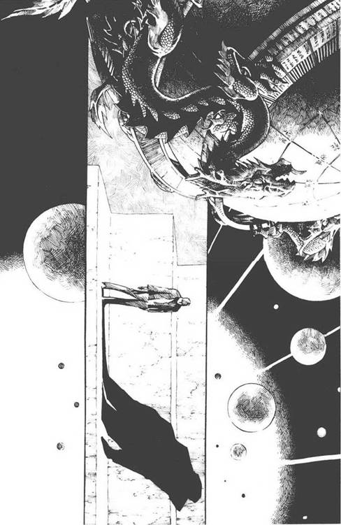
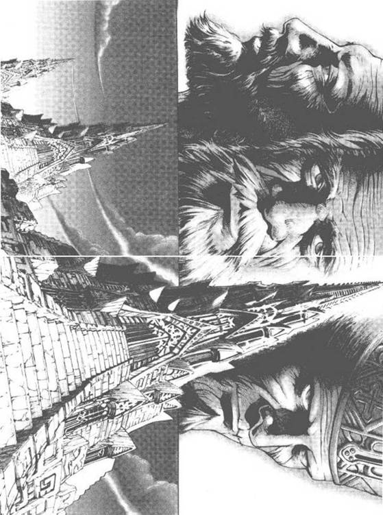

10.大史
大史在汪淼身边坐了下来，将一把车钥匙递给他，“东单口儿上就随便停车，我晚一步就让交警拖走了。”
大史啊，要知道你一直跟在我后面，我至少会有些安慰的。汪淼心里说，但自尊使他没将这话说出口。他接过大史递来的一支烟，点上后，抽了戒烟几年后的第一口。
“怎么样老弟，扛不住了吧？我说你不成吧，你还硬充六根脚趾头。”
“你不会明白的。”汪淼猛抽几口烟说。
“你是太明白了……那好，去吃饭吧。”
“我不想吃。”
“那去喝酒，我请你！”
汪淼于是上了大史的车，开到附近一家小饭店，天还早，店里没什么人。
“二斤爆肚，一瓶二锅头！”大史喊道，头也不抬，显然对这儿很熟了。
看到端上来的两大盘黑乎乎的东西，汪淼空空的胃翻腾起来，差点吐出来。大史又给他要豆浆和油饼，汪淼强迫自己吃了点儿，然后和大史一杯接一杯地喝了起来。他感觉自己轻飘飘的，话也多了起来，将这三天的事情全部向大史说了，虽然他清楚，大史可能都知道，甚至知道得比他还多。
“你是说，宇宙在冲你眨巴眼儿？”大史像吃面条似的吞下半盘爆肚，抬头问。
“这比喻很到位。”
“扯淡。”
“你的无畏来源于无知。”
“还是扯淡，来，干！”
汪淼干了这杯后，感觉世界围绕着自己旋转，只有对面吃爆肚的大史很稳定，他说：“大史啊，你——考虑过一些终极的哲学问题吗？哦，比如说，人类从哪里来，要到哪里去；宇宙从哪里来，要到哪里去之类的。”
“没有。”
“从来没有？”
“从来没有。”
“你总看到过星空吧，难道没有产生过一点敬畏和好奇？”
“我夜里从不看天。”
“怎么可能呢？你们不是常上夜班吗？”
“老弟，我夜里蹲点时要是仰头看天，那监视对象溜了怎么办？”
“我们真没得谈，干！”
“其实啊，我就是看天上的星星也不会去想你那些终极哲学，我要操心的事儿多着呢，要供房子，孩子还要上大学，更不要提那没完没了的案子……我是个一眼能从嘴巴看到屁眼的直肠子，自然讨不得领导欢心，退伍后混了多少年还是这么个熊样儿；要不是能干活，早让人踹出去了……这些还不够我想的，我还有心思看星星想哲学？”
“那倒也是，来，干！”
“不过啊，我倒还真发明了一条终极定理。”
“说说。”
“邪乎到家必有鬼。”
“你这是……什么狗屁定理！”
“我说的‘有鬼’是指没有鬼，是有人在捣鬼。”
“如果你有些起码的科学常识，就无法想象是怎样的力量才能做成这两件事，特别是后一件，在整个宇宙尺度上，不但用人类现有的科学无法解释，甚至在科学之外我都无法想象。这连超自然都不是，我都不知道是超什么了……”
“还是那句话：扯淡！邪乎事儿我见多了。”
“那你给个建议，下一步我该怎么办？”
“继续喝，喝完了睡觉。”
……
※※※
汪淼不知道自己是怎么回到自己的车上，躺在后座上陷入了无梦的沉睡，感觉时间并不长，但睁开眼睛后，看到太阳已在城市的西边快要落下去了。他走下车，虽然早上喝的酒让他浑身发软，但感觉好多了。他看到，自己正在紫禁城的一角，夕阳照在古老的皇宫上，在护城河中泛起碎金，在他眼中，世界又恢复了古典和稳定。汪淼就这样享受着久违的宁静，直到天色暗下来，那辆他熟悉的黑色桑塔纳从街道上的车流中钻出来，径直开过来刹住，大史走了下来。
“睡好了？”大史瓮声瓮气地问。
“是，下一步该怎么办？”
“谁，你吗？去吃晚饭，再喝点儿，喝完接着睡。”
“然后呢？”
“然后？明天你总得去上班吧。”
“倒计时已减到……1091小时了。”
“去他妈的倒计时，你现在首先要保证站直了别趴下，然后才能说别的。”
“大史，你就不能告诉我一些真相吗？就算我求你了。”
大史盯着汪淼看了一会儿，然后仰天一笑，“这话我也对常伟思说过几次，咱俩是难兄难弟。实话告诉你，我他妈的什么也不知道，级别低，他们不告诉我，有时真像在做噩梦。”
“可你知道的总比我多。”
“那好，我现在就把多出来的都告诉你。”大史指了指护城河的河沿，两人在那里找了个地方坐下来。天已经黑了下来，身后是车灯的河流，他们看着自己的影子在河面上长长短短地变幻着。
“干我们这行的，其实就是把好多看上去不相关的事串联起来，串对了，真相就出来了。前一阵发生过好多事儿，针对科研机构和学术界的犯罪急剧增多，这是从未有过的事儿。你当然知道良湘加速器工地的那起爆炸案，还有那名获诺贝尔奖的学者被杀的案子……罪犯的动机都很怪，不为钱，不是报复，也没什么政治背景，单纯地搞破坏。还有其他一些犯罪之外的事，比如‘科学边界’和那些学者的自杀等等。环保分子最近的活动也过分活跃，一会儿在工地集会阻止水库和核电站的建设，一会儿又搞什么回归自然的试验社会……还有其他一些看上去是鸡毛蒜皮的事儿——你最近看电影吗？”
“基本不看。”
“最近的几部大片，全土得掉渣，上面青山绿水的，不知哪个年代的帅哥靓妹在里面男耕女织过得挺舒服，用导演的话说，是表现被科技强奸之前的美好生活。比如那部《桃花源》，明摆着拍出来没人看，可就有人硬把几个亿砸进去。还有一个科幻小说征文大赛，最高奖五百万，谁把未来写得最恶心谁就能得奖，然后又砸进去几个亿把那几篇小说拍成电影……奇奇怪怪的邪教也都冒出来，每一个教主都财大气粗……”
“这些与你前面说的有什么关系？”
“得把它们串起来看，当然我以前用不着操这份闲心，但从重案组调到作战中心后，这就是我分内的事儿了。我能把它们串起来，这就是我的天分，连常伟思也不得不服。”
“得出的结论呢？”
“所有这一切，都有且只有一个后台，它想把科学研究彻底搞垮。”
“谁？”
“不知道，真的不知道，但能感觉到它的计划，很气派很全面的一个计划：破坏科研设施，杀害科学家；或让你们自杀，让你们发疯……但主要还是让你们往歪处想，这样你们就变得比一般人还蠢。”
“您最后这句真精辟！”
“同时，还要在社会上把科学搞臭，当然以前也一直有人干这个，但这次绝对是有组织的。”
“我相信你说的。”
“哼，也就是现在吧。你们这些科学精英都看不出来的事，居然被我这个专科毕业的大老粗看出来了？我说出这个想法后，没少被领导和学者们笑话。”
“就是当时你对我说这些，我也肯定不会笑话你。你知道一些伪科学的事吧，知道那些搞伪科学的最怕什么人吗？”
“科学家呗。”
“错了，世界上有许多一流学者被伪科学骗得团团转，最后还为之摇旗呐喊。但伪科学最怕另一种人，他们很难被骗：魔术师。事实上，大量的伪科学骗局，都是被魔术师揭穿的。比起科学界的书呆子来，你多年的警务和社会经验显然更有能力觉察这种大规模犯罪。”
“其实比我聪明的人还是有的，这种事早就被上面觉察了，我开始时还被笑话是没找对地方，再后来就被老连长招到了这儿，不过也只是干些跑腿的事儿……好了，这就是我比你多知道的那点儿。”
“有个疑问：这些与军方有什么关系呢？”
“我也纳闷，问他们，他们就说战争爆发了，战争当然是军队的事儿。我和你一样，开始以为他们是在说梦话，可他们真没开玩笑，现在部队确实处于临战状态。我们这样的作战中心，在全球有二十多个，上面还有一级，但谁都不知道是什么。”
“敌人是谁？”
“不知道。北约军官进驻总参的作战室了，五角大楼里也有一大帮子解放军，谁他妈知道谁是敌人？”
“这也太离奇了，你说的这都是真的？！”
“我在部队的好几个老战友现在都混成将军了，所以知道一些。”
“这么大的事，新闻媒体居然没有一点儿反应？”
“这又是一个了不得的现象：所有国家同时保密，而且做得这么严实。我现在可以肯定一点：敌人是个狠角色，上面害怕了！我太熟悉常伟思了，从他那里就能看出来，他是天塌下来都不怕的人，但现在塌下来的可能不止是天了。他们被吓得够呛，他们根本没有信心战胜那个敌人。”
“要这样，那太可怕了。”
“不过谁都有怕的东西，那个狠角色也有；越厉害的角色，它怕的东西对它就越致命。”
“那它怕什么？”
“怕你们，怕科学家。而且奇怪的是，你们研究的东西越是没有实际用处，越是天马行空不着边际，像杨冬那号的，它就越怕，比你怕宇宙眨眼更怕，所以才出手这么狠。要是杀你们有用，它早就把你们杀光了，但最有效的办法还是扰乱你们的思想，人死了还会有别人，但思想乱了，科学就完了。”
“你是说它怕基础科学？”
“是，基础科学。”
“我和杨冬的研究差别很大，纳米材料不是基础科学，只是一种高强度材料，能威胁到哪种力量？！”
“你还真是个特例，像你这种搞应用研究的，它现在一般还不打扰，也许你那材料中真有让它怕的东西。”
“那我该怎么办？”
“去上班，研究下去，这就是对它最大的打击，别管什么倒计时。如果下了班想放松，也可以玩玩那个游戏，能打通它最好。”
“游戏？《三体》？难道它与这些也有关系？！”
“有关系，我看作战中心的好几个专家也在玩儿，那玩意儿不是一般的游戏，我这样无知无畏的人玩不了，还真得你这样有知识的才行。”
“哦，没别的了？”
“没了，有的时候我再告诉你，手机要一直开着。老弟，可得站直啰！害怕的时候就想想我那条终极定理。”
汪淼连谢谢都没来得及说，大史就上车走了。
11.三体、墨子、烈焰
汪淼回到家里，之前没有忘记在游戏店买了一套V装具。妻子告诉他，单位的人一天都在找他。汪淼打开已关了一天的手机回了几个纳米中心来的电话，许诺明天去上班。吃饭的时候，他真的照大史说的又喝了不少酒，但毫无睡意。当妻儿睡熟后，他坐在电脑前戴上新买回的V装具，再次登录《三体》。
黎明的荒原，汪淼站在纣王的金字塔前，覆盖它的积雪早已消失，构筑金字塔的大石块表面被风化得坑坑洼洼，大地已是另一种颜色。远处有几幢巨大的建筑物，汪淼猜那都是干仓，但形状与上次所见已完全不同，一切都表明，漫长的岁月已经流逝。
借着天边的晨曦，汪淼寻找着金字塔的入口，在那个位置，他看到入口已经被石块封死了，但同时看到旁边新修了一条长长的石阶，直通金字塔的顶部。他仰望高高的塔顶，看到原来那直指苍穹的塔顶已被削平了，成为一个平台，这座金字塔也由埃及式变为阿兹特克式。
沿着石阶，汪淼攀上了金字塔的顶部，看到了一处类似于古观星台的地方。平台的一角有一架数米高的天文望远镜，旁边还有几架较小型的。另一边是几台奇形怪状的仪器，很像古中国的浑天仪。最引人注目的是平台中央的一个大铜球，直径两米左右，放置在一台复杂的机器上，由许多大小不同的齿轮托举着，缓缓转动。汪淼注意到，它的转动方向和速度在不停地变化。在机器下方有一个方坑，在里面昏暗的火光中，汪淼看到几个奴隶模样的人在推动着一个转盘，为上面的机器提供动力。
有一个人朝汪淼走来，与上次首遇周文王时一样，这人背对着地平线的曙光，只能看到黑暗中一双闪亮的眼睛。他身材瘦高，身着飘逸的黑色长袍，长发在头顶上不经意地绾了个结，剩下的在风中飞扬。
“你好，我是墨子。”他自我介绍道。
“我是海人，你好。”
“啊，我知道你！”墨子兴奋地说，“在137号文明中，你追随过周文王。”
“我是同他一起到过这里，但从不相信他的理论。”
“你是对的。”墨子对汪淼郑重地点点头，然后凑近他说，“知道吗，在你离开的三十六万两千年里，文明又重新启动了四次，在乱纪元和恒纪元的无规律交替中艰难地成长，最短的一次只走完了石器时代的一半，但139号文明创造了纪录，居然走到了蒸汽时代！”
“这么说，在那个文明中有人找到了太阳运行的规律？”
墨子大笑着摇头：“没有没有，侥幸而已。”
“但人们一直在努力吧？”
“当然，来，我让你看看上次文明的努力。”墨子领着汪淼走到观星台一角，大地在他们下面伸展开来，像一块沧桑的旧皮革，墨子将一架小望远镜对准下面大地上的一个目标，然后让汪淼看。汪淼将眼睛凑到目镜上，看到一个奇异的东西，那是一具骷髅，在晨光中呈雪白色，看上去结构很精致。最令人惊奇的是这骷髅站立着，那姿势很是优雅高贵，一只手抬到颚下，似乎在抚摸着那已不存在的胡须，它的头微仰，仿佛在向天地发问。
“那是孔子。”墨子指着那个方向说，“他认为，一切都要合乎礼，宇宙万物都不例外。他于是创造了一套宇宙的礼法系统，企图据此预测太阳的运行。”
“结果可想而知。”
“是的，他计算出太阳该循礼之时，就预测了一次长达五年的恒纪元，你别说，那一次还真持续了一个月之久。”
“然后，有一天太阳再也没有出来？”
“不，那天太阳出来了，升到了正空，但突然熄灭了。”
“什么？熄灭？！”
“是的，开始是慢慢暗下去、小下去，然后突然熄灭了！夜幕降临，那个冷啊，孔子就那么站着冻成了冰柱，一直站到现在。”
“什么都没有了吗？我是说熄灭后的太阳？”
“在那个位置，出现了一颗飞星，像是太阳死后的灵魂。”
“哦，你肯定太阳是突然熄灭，飞星是突然出现的吗？”
“是，突然熄灭，飞星就出现了。你可以去查日志数据库，这记载没错。”
“哦——”汪淼沉吟良久，本来，对于三体世界的奥秘，他心中已经有了一个模糊的理论，但墨子说的这件事将他所想的全推翻了，“怎么会是……突然的呢？”他懊恼地说。
“现在是汉朝，西汉还是东汉我也不清楚。”
“你也是一直活到现在？”
“我有使命，要准确观测太阳的运行。那些巫师、玄学家和道学家们都是些无用的东西，他们四体不勤、五谷不分，动手能力极差，只是沉浸于自己的玄想中。但我不同，我能做出实际的东西来！”他指指平台上的众多仪器说。
“凭着这些就能达到你的目的吗？”汪淼指了指仪器，特别是那个神秘的大铜球说。
“我也有理论，但不是玄学，是通过大量观测总结出来的。首先，你知道宇宙是什么吗？是一部机器。”
“这等于没说。”
“说得具体些，宇宙是一个悬浮于火海中的大空心球，球上有许多小洞和一个大洞，火海的光芒从这些洞中透进来，小洞是星星，大洞是太阳。”
“很有意思的一个模型，”汪淼看看大铜球说，现在他大概能猜出那是什么了，“但其中有一个大漏洞：太阳升起和落下时，我们看到它与群星是相对运动的，而大球球壳上的所有洞孔的相对位置应该是固定的。”

“很对，所以我推出了经过修正的模型，宇宙之球是由两层球壳构成的，我们看到的天空是内层壳，外层球壳上有一个大洞，内层球壳上有大量小洞，那个外壳上的大洞透进的光在两层球壳之间的夹层反射和散射，使夹层间充满了亮光，这亮光从小洞中透进来，我们就看到了星星。”
“那太阳呢？”
“太阳是外层壳上的大洞投射到内层壳上的巨大光斑，它的亮度如此之高，像照穿鸡蛋壳一般照穿了内壳，我们就看到了太阳。光斑周围的散射光较强，也照穿了内壳，这就是我们白天看到的晴空。”
“是什么力量驱动着两层球壳进行不规则转动呢？”
“是宇宙之外火海的力量。”
“可不同时期的太阳大小和亮度是不一样的。在你的双壳模型中，太阳的大小和亮度应该是恒定的，如果外界火海不均匀，至少大小应该是恒定的。”
“你把这个模型想得太简单了，随着外界火海的变化，宇宙的外层壳的大小也会膨胀或收缩，这就导致了太阳大小和光度的变化。”
“那飞星呢？”
“飞星？你怎么总是提飞星？它们是些不重要的东西，是宇宙球内乱飞的灰尘。”
“不，我认为飞星很重要。另外，你的模型如何解释孔子时代太阳当空熄灭呢？”
“那是个罕见的例外，可能是宇宙外面的火海中的一个暗斑或黑云正好飘过外层壳上的大洞。”
汪淼指指大铜球问：“这一定就是你的宇宙模型吧？”
“是的，我造出了宇宙机器。使球转动的那一组复杂的齿轮，模拟着外界火海对球的作用。这种作用的规律，也就是外界火海中火焰的分布和流动规律，是我经过几百年的观测总结出来的。”
“这球可以膨胀收缩吗？”
“当然可以，现在它就在缓慢收缩。”
汪淼找了平台边的栏杆作为固定参照物细看，发现墨子说的是事实。
“这球有内层壳吗？”
“当然有，内外壳之间通过复杂的机构传动。”
“真是精巧的机械！”汪淼由衷地赞叹道，“可从外壳上没有看到在内层壳投射光斑的大洞啊？”
“没有洞，我在外壳的内壁上安装了一个光源，作为大洞的模拟。那光源是用从几十万只萤火虫中提炼出来的荧光材料制成的，发出的是冷光，因为内壳的半透明石膏球层导热性不好，这样可以避免一般的热光源在球内聚集温度，让记录员可以在里面长期待下去。”
“球里面还有人？”
“当然，记录员站在一个底部有滑轮的架子上，位置保持在球体中心。将模拟宇宙设定到现实宇宙的某一状态后，它其后的运转将准确地模拟出未来的宇宙状态，当然也能模拟出太阳的运行状态，那名记录员将其记录下来，就形成了一本准确的万年历，这是过去上百个文明梦寐以求的东西啊。你来得正好，模拟宇宙刚刚显示，一个长达四年的恒纪元将开始，汉武帝已根据我的预测发布了浸泡诏书，让我们等着日出吧。”
墨子调出了游戏界面，将时间的流逝速度稍微调快了些。一轮红日升出地平线，大地上星罗棋布的湖泊开始解冻，这些湖泊原来封冻的冰面上落满了沙尘，与大地融为一体，现在渐渐变成一个个晶莹闪亮的镜面，仿佛大地睁开了无数只眼睛。在这高处，浸泡的具体细节看不清楚，只能看到湖边的人渐渐多了起来，像春天拥出洞穴的蚁群。世界再一次复活了。
“您不下去投身于这美妙的生活吗？刚刚复活的女性是最渴望爱情的。”墨子指着下面重现生机的大地对汪淼说，“你在这里再待下去没有意义了，游戏已经终结，我是最后的胜者。”
“你的模拟宇宙作为一台机器确实精妙绝伦，但对它做出的预测嘛……哦，我能否使用您那台望远镜观测天象呢？”
“当然可以，你请。”墨子对着大望远镜做了个手势。
汪淼走到望远镜前，立刻发现了问题：“要观测太阳，怎么办呢？”
墨子从一只木箱中拿出了一块黑色圆片，“加上这片烟熏的滤镜。”说着将它插到望远镜的目镜前。
汪淼将望远镜对准已升到半空的太阳，不由赞叹墨子的想象力：太阳看上去确实像一个通向无边火海的孔洞，是一个更大存在的一小部分。但进一步细看时，他发现，这个太阳与自己现实经验中的那个有些不同，它有一颗很小的核心，如果将太阳看成一只眸子，这个日核就像瞳孔。日核虽小，但明亮而致密，包裹它的外层则显得有些缺少实在感，飘忽不定，很像是气态的。而穿过那厚厚的外层能看到内部日核，也说明外层是处于透明或半透明状态的，它发出的光芒，更多的可能是日核光芒的散射。
太阳图像的真实和精致令汪淼震惊，他再次确定，游戏的作者在表面简洁的图像深处有意隐藏了海量的细节，等待着玩家去发掘。
汪淼直起身，细想着这个太阳的结构隐含的意义，立刻兴奋起来。由于游戏时间加速，太阳已移到了西天，汪淼调整望远镜再次对准它，一直跟踪到它落下地平线。夜幕降临，大地上点点篝火与夜空渐密的群星相映。汪淼将望远镜上的黑色滤镜取下，继续观测星空，他最感兴趣的是飞星，很快找到了两个。他只来得及对其中的一个进行大概的观察，天就又亮了，他于是装上滤镜接着观测太阳……汪淼就这样连续进行了十多天的天文观测，享受着发现的乐趣。其实，时间流逝速度的加快是有利于天文观测的，因为这使得天体的运行和变化更加明显。
恒纪元开始后的第十七天，日出时间已过了五个小时，大地仍笼罩在夜幕中。金字塔下面人山人海，无数火把在寒风中摇曳。
“太阳可能不会出来了，同137号文明的结局一样。”汪淼对正在编纂这个世界上第一份万年历的墨子说。
墨子抚着胡须，对汪淼露出自信的笑容，“放心，太阳就要升起，恒纪元将继续，我已经掌握了宇宙机器的运转原理，我的预测不会有错。”
似乎是印证墨子的话，天边真的出现了曙光，金字塔旁边的人群中爆发出一阵欢呼声。
那片银白色的曙光以超乎寻常的速度扩展变亮，仿佛即将升起的太阳要弥补失去的时间。很快，曙光已弥漫了半个天空，以至太阳还未升起，大地已同往日的白昼一样明亮。汪淼向曙光出现的远方看去，发现地平线发出刺眼的强光，并向上弯曲拱起，成一个横贯视野的完美弧形，他很快看出那不是地平线，是日轮的边缘，正在升起的是一颗硕大无比的太阳！眼睛适应了这强光后，地平线仍在原位显现出来，汪淼看到一缕缕黑色的东西在天边升起，在日轮明亮的背景上格外清晰，那是远方燃烧产生的烟雾。金字塔下面，一匹快马从日出方向飞驰而来，扬起的尘埃在大地上划出一道清晰的灰线，人群为其让开了一条路，汪淼听到马上的人在声嘶力竭地大喊：“脱水！脱水！！”
跟着这匹马跑来的，是一大群牛马和其他动物，它们的身上都带着火焰，在大地上织成一张移动的火毯。
巨日已从地平线上升起了一半，占据了半个天空，大地似乎正顺着一堵光辉灿烂的大墙缓缓下沉。汪淼可以清晰地看到太阳表面的细节，火焰的海洋上布满涌浪和旋涡，黑子如幽灵般沿着无规则的路线漂浮，日冕像金色的长袖懒洋洋地舒展着。
大地上，已脱水和未脱水的人都燃烧起来，像无数扔进炉膛的柴火，其火焰的光芒比炉膛中燃烧的炭块都亮，但很快就熄灭了。
巨日迅速上升，很快升到了正空，遮盖了大部分天空。汪淼仰头看去，感觉突然间发生了奇妙的变化：这之前他是在向上看，现在似乎是在向下看了。巨日的表面构成了火焰的大地，他感觉自己正向这灿烂的地狱坠落！
大地上的湖泊开始蒸发，一团团雪白的水蒸汽成蘑菇云状高高升起，接着弥散开来，遮盖了湖边人类的骨灰。
“恒纪元将继续，宇宙是一台机器，我造出了这台机器；恒纪元将继续，宇宙是……”
汪淼扭头一看，这声音是从正在燃烧的墨子发出来的，他的身体包含在一根高高的橘黄色火柱之中，皮肤在发皱和炭化，但双眼仍发出与吞噬他的火焰完全不同的光芒。他那已成为燃烧的炭杆的双手捧着一团正在飞散的绢灰，那是第一份万年历。汪淼自己也在燃烧，他举起双手，看到了两根火炬。
巨日很快向西移去，让出被它遮住的苍穹，沉没于地平线下，下沉的过程很快，大地似乎又沿着那堵光墙升起。耀眼的晚霞转瞬即逝，夜幕像被一双巨手拉扯的大黑布般遮盖了已化为灰烬的世界。刚刚被烧灼过的大地在夜色下发着暗红色的光，像一块从炉中夹出来不久的炭块。汪淼在夜空中看到群星出现了一小会儿，很快，水汽和烟雾遮住了天空，也遮住了处于红炽状态的大地上的一切，世界陷入一片黑暗的混沌之中。一行红色的字出现：
第141号文明在烈焰中毁灭了，该文明进化至东汉层次。
文明的种子仍在，她将重新启动，再次开始在三体世界中命运莫测地进化，欢迎您再次登录。
汪淼摘下V装具，精神上的震撼稍稍平息后，又一次有了那种感觉：《三体》是故意伪装成虚假，但拥有巨大纵深的真实；而眼前的真实世界，倒像一幅看似繁复庞杂实则单薄表浅的《清明上河图》。
第二天汪淼去纳米中心上班，除了因他昨天没来导致的一些小小的混乱外，一切如常。他发现工作是一种有效的麻醉剂，投身于其中，就暂时躲开了那噩梦般的困扰。一整天他有意使自己保持忙碌状态，天黑后才离开实验室。
一走出纳米中心的大楼，汪淼又被那噩梦的感觉追上了，他觉得布满群星的夜空像一面覆盖一切的放大镜，他自己是镜下的一只赤裸的小虫，无处躲藏。他必须再为自己找些事情做，想到应该再去看看杨冬的母亲了，就驱车来到了叶文洁家。
杨母一个人在家，汪淼进去时她正坐在沙发上看书，他这才发现她的眼睛既老花又近视，看书和看远处时都要换戴眼镜。杨母见到汪淼很高兴，说他的气色看上去比上次好多了。
“都是因为您的人参。”汪淼笑笑说。
杨母摇摇头，“那东西成色不好，那时，在基地周围能采到很好的野山参，我采到过一枝有这么长的……不知现在那里怎么样，听说已经没有人了。唉，老了，最近总是在想以前的事。”
“听说在‘文革’中，您吃过不少苦。”
“听小沙说的吧？”杨母轻轻摆摆手，像拂去面前的一根蛛丝，“过去了，都过去了……昨天小沙来电话，急匆匆的，说些什么我也听不明白，只听出来你好像遇到什么事。小汪啊，其实，你到了我这个年纪，就会发现当年以为天要塌下来的那些大事，其实没有什么的。”
“谢谢您。”汪淼说，他又感到了那种难得的温暖。现在，眼前这位历经沧桑变得平静淡泊的老人，和那位无知而无畏的大史，成了他摇摇欲坠的精神世界的两根支柱。
杨母接着说：“说起‘文革’，我还是很幸运的，在活不下去的时候，竟意外地到了一个能活下去的地方。”
“您是说红岸基地吗？”
杨母点点头。
“那真是件不可思议的事情，我最初还以为纯属传说呢。”
“不是传说，要是想知道，我给你讲讲自己经历过的那些事。”
杨母这一说令汪淼有些紧张。“叶老师，我只是好奇而已，要是不方便就算了。”
“哦，没什么的，就当我找人说说话吧，我这阵子也确实想找人说说话。”
“您可以到老年活动室什么的去坐坐，多走动走动总是不寂寞。”
“那些退休的老家伙好多都是我在大学的同事，但总是同他们融不到一块儿，大家都喜欢念念叨叨地回忆往事，但都希望别人听自己的，而对别人说的都厌烦。红岸那些事，也就你感兴趣了。”
“现在说总还是有些不方便吧？”
“那倒是，毕竟还属于机密。不过那本书出了以后，许多亲历过的人也都在说，都是公开的秘密了。写那本书的人很不负责任，他的目的先放到一边，书中的许多内容也与事实有很大出入，纠正一下也是应该的。”
于是，杨母向汪淼讲述了那段还未尘封的往事。
12.红岸之二
刚进入红岸基地时，叶文洁没有被分配固定工作，只是在一名安全人员的监视下干一些技术上的杂事。
早在上大二时，叶文洁同后来的研究生导师就很熟悉。他对叶文洁说，研究天体物理学，如果不懂实验技术，没有观测能力，理论再好也没有用，至少在国内是这样。这与她父亲的观点倒是大相径庭，但叶文洁是倾向于同意这种看法的，她总感觉父亲太理论了。导师是国内射电天文学的开创者之一，在他的影响下，叶文洁也对射电天文产生了浓厚的兴趣，她因此自学了电子工程和计算机专业 ① ，这是该学科实验和观测的技术基础。在读研究生的两年中，她同导师一起调试国内第一台小型射电望远镜，又积累了不少这方面的经验。没有想到，她的这些知识竟在红岸基地派到了用场。
叶文洁最初在发射部做设备维护和检修，很快成了发射部不可缺少的技术骨干，这让她有些不解。她是基地里唯一不穿军装的人，更由于她的身份，所有人都同她保持距离，这使得她只能全身心投入工作中以排遣孤寂。但这也不足以说明问题，这毕竟是国防重点工程，难道这里的技术人员就那么平庸，非要让她这个非工科出身也没有工作经验的人轻易代替吗？
她很快发现了一些原因。与表面看到的相反，基地配备的都是二炮部队最优秀的技术军官，这些卓越的电子和计算机工程师，她再学一辈子可能也赶不上。但基地地处偏僻，条件很差，而且红岸系统的主要研制工作已经结束，只是运行和维护，在技术上也没有什么做出成果的机会，大多数人都不安心工作，他们知道，在这种最高密级的项目里，一旦进入技术核心岗位，就很难调走。所以人们在工作中都故意将自己的能力降低很多，但还不能表现落后，于是领导指挥向东，他就卖力气地向西，故意装傻，指望领导产生这样的想法：这人也尽力了，但就这么点能力和水平，留他没什么用，反而碍手碍脚的。
许多人真的这样成功地调离了。在这种情况下，叶文洁不知不觉中成了基地的技术中坚。但走到这个位置的另一个原因却令她百思不得其解：红岸基地至少在她接触的部分，没有什么真正意义上的先进技术。
进入基地后，叶文洁主要在发射部工作，随着时间的推移，对她的限制渐渐放松，那名时刻陪着她的监视人员也取消了，她可以接触红岸系统的大部分结构，也可以阅读相应的技术资料。当然，禁止她接触的东西还是有的，比如计算机控制部分，就绝对禁止她走近。但叶文洁后来发现，那一部分对红岸系统的作用远没有她以前想象的那么大。比如发射部的计算机，是三台比DJS130还落后的设备，使用笨重的磁心存储器和纸带输入，最长的无故障小时数不超过十五小时。她还看到过红岸系统的瞄准部分，精度很低，可能还不如一门火炮的瞄准装具。
这天，雷政委又找叶文洁谈话。现在，在她的眼中，杨卫宁和雷志成换了个位置。在这个年代，作为最高技术领导的杨卫宁在政治上的地位并不高，离开技术就没有什么权威了，对部下也只能小心翼翼的，连对哨兵说话都要客气些，否则就是知识分子对“三结合”和思想改造的态度问题。于是，遇到工作上不顺心的时候，叶文洁就成了他唯一的出气筒。但随着叶文洁在技术上变得越来越重要，雷政委渐渐改变了最初对她的粗暴和冷漠，变得和蔼起来。
“小叶啊，到了现在，对发射系统这块你已经很熟悉了，这也是红岸系统的攻击部分，是它的主体，说说你对这套系统的整体看法？”雷政委说，他们这时坐在雷达峰的那道悬崖前，这里是基地最僻静的所在。那笔直的绝壁似乎深不见底，最初令叶文洁胆战心惊，但现在她很喜欢一个人到这里来。
对雷政委的问话，叶文洁有些不知所措。她只负责设备的维护和维修，对红岸系统的整体情况，包括它的作用方式、攻击目标等，一概不知，也不允许她知道，每次常规发射她都不能在场。她想了想，欲言又止。
“大胆说吧，没关系。”雷政委扯下身边的一根草在手里摆弄着说。
“它……不过就是一台无线电发射机嘛。”
“不错，它就是一台无线电发射机。”雷政委满意地点点头，“你知道微波炉吗？”
叶文洁摇摇头。
“西方资产阶级的奢侈玩意儿，用微波被吸收后产生的热效应加热食物。我以前在的那个研究所，为了精密测试某种元件的高温老化，从国外进口了一台。我们下了班也用它热馒头、烤土豆，很有意思，里面先热，外头还是凉的。”雷政委说着站了起来，来回踱步，他走得如此贴近悬崖边缘，令叶文洁十分紧张，“红岸系统就是一台微波炉，加热的目标是敌人在太空中的航天器。只要达到0.1～1瓦/平方厘米的微波能量辐射，就可直接使卫星通信、雷达、导航等系统的微波电子设备失效或烧毁。”
叶文洁恍然大悟。红岸系统虽然只是一台电波发射机，但并不等于它就是个寻常之物，最令她吃惊的是它的发射功率，竟然高达二十五兆瓦！这不仅远大于所有的通讯发射功率，也大于所有的雷达发射功率。红岸系统由一组庞大的电容提供发射能量，由于功率巨大，它的发射电路也与常规的有很大不同。叶文洁现在明白了这种超大发射功率的用途，但她立刻想到了一个问题：
“系统发射的电波，好像是经过调制的。”
“是的，但这种调制与常规无线电通讯完全不同，不是为了加载信息，而是用变化的频率和振幅突破敌人可能进行的屏蔽防护，当然，这些还都在试验中。”
叶文洁点点头，以前心中的许多其他疑问现在也都得到了解答。
“最近，从酒泉发射了两颗靶标卫星，红岸系统进行的攻击试验，完全成功，摧毁了目标，使卫星内部达到了近千度的高温，搭载的仪器和摄影设备全部被破坏。在未来的实战中，红岸系统可以有效打击敌人的通信和侦察卫星，像美帝目前的主力侦察卫星KH8，和即将发射的KH9，苏修那些轨道更低的侦察卫星就更不在话下了。必要的时候，还有能力摧毁苏修的礼炮号空间站和美帝计划于明年发射的天空实验室。”
“政委，你在对她说些什么？”有人在叶文洁身后说。她转身一看，是杨卫宁，他盯着雷政委，目光很严厉。
“我这是为了工作。”雷政委扔下一句话，转身走了。杨卫宁无言地看了叶文洁一眼，也跟着走去，只丢下叶文洁一人。
“是他把我带进基地的，可到现在他还是不信任我。”叶文洁悲哀地想，同时在为雷政委担心。在基地，雷志成的权力大于杨卫宁，各项重大事务政委有最终决定权。但刚才他匆匆离去的样子，显然是觉得在总工程师面前做错了什么事，这让叶文洁确信他将红岸的真实用途告诉自己，可能只是个人的决定。对于他这将产生什么样的后果？看着雷政委那魁梧的背影，叶文洁心中涌上了一股感激之情，对于她，信任无疑是一种不敢奢望的奢侈品。与杨卫宁相比，雷志成是叶文洁心目中真正的军人，有着军人的坦诚和直率，而杨卫宁只是一个她见过很多的这个时代典型的知识分子，胆小谨慎，只求自保平安。虽然叶文洁理解他，但与他本来就很远的距离更拉远了。
第二天，叶文洁被调离了发射部，安排到监听部工作。她原以为这与昨天的事有关，是将她调离红岸的核心部门，但到监听部后，才发现这里更像红岸的核心。虽然两个部门在设备系统上有重叠之处，比如共用同一个天线，但监听部的技术水平比发射部要先进一个层次。
监听部有套十分先进的电波灵敏接收系统，从巨型天线接收到的信号通过红宝石型微波激射器放大——为了抑制系统本身的干扰，竟将接收系统的核心部分浸泡于-269℃的液氦中，液氦由直升机定期运来以补充消耗。这使得系统具有极高的灵敏度，能够接收到很微弱的信号。叶文洁不禁想，如果用这套设备从事射电天文研究，那将是多么美妙的事情啊。
监听部的计算机系统也远比发射部庞大复杂，叶文洁第一次走进主机房时，看到一排阴极射线管显示屏，她惊奇地发现，屏幕上竟滚动着一排排程序代码，可以通过键盘随意进行编辑和调试。而她在大学里使用计算机时，代码都写在一张张打格的程序纸上，再通过打字机噼噼啪啪地打到纸带上。她听说过从键盘和屏幕输入这回事，现在竟然真的看到了。但更令她吃惊的是这里的软件技术，她知道了一种叫FORTRAN ② 的东西，竟能用接近自然语言的代码编写程序，能将数学公式直接写到代码里！它的编程效率比机器码汇编不知高了多少倍。还有一种叫数据库的东西，竟能那样随心所欲地操纵海量数据。
两天后，雷政委又找叶文洁谈话，这次是在监听部的主机房里，在那一排闪着绿光的计算机显示器前。杨卫宁坐在距他们不远处，既不想参加他们的谈话，又不能放心离开，这令叶文洁感到很不自在。
雷政委说：“小叶，现在我向你说明监听部的工作内容，简单地说，就是对敌人的太空活动进行监视，包括监听敌人航天器与地面和航天器间的通讯，与我航天测控部门配合，锁定敌航天器的轨道位置，为红岸系统的作战提供依据，可以说，是红岸的眼睛。”
杨卫宁插进来说：“雷政委，我觉得你这样不好，真的没必要对她说这些。”
叶文洁看看不远处的杨卫宁，不安地说：“政委，如果不适宜让我了解，就……”
“不，不，小叶，”雷政委抬起一只手制止叶文洁说下去，转身对杨卫宁说，“杨总，还是那句话，为了工作，要进一步发挥小叶的作用，她该知道的还是得知道。”
杨卫宁站了起来，“我要向上级汇报！”
“这当然是你的权利。不过，杨总，请你放心，对这事，我负一切责任。”雷政委平静地说。
杨卫宁起身悻悻地离去。
“你别在意，杨总就这样，过分谨慎，有时工作放不开手脚。”雷政委笑着摇摇头，然后直视着文洁，语气郑重起来，“小叶，最初带你来基地，目的很单纯：红岸监听系统经常受到太阳耀斑和黑子活动产生的电磁辐射的干扰，我们意外地看到了你的那篇论文，发现你对太阳活动有比较深入的研究。在国内，你提出的预测模型是最准确的，所以就想让你协助解决这个问题。但你来了后，在技术上表现出了很强的工作能力，所以我们决定让你承担更多、更重要的工作。我是这么打算的：让你先到发射部，再到监听部，对红岸系统有一个整体的了解和熟悉，至于以后安排什么工作，我们再研究。当然，你也看到了，这有阻力，但我是信任你的。小叶，这里要说明，到目前为止，这种信任还只是我个人的，希望你能努力工作，最后赢得组织上的信任。”雷政委把一只手放到叶文洁的肩上，她感到了这只有力的手传递的温暖和力量，“小叶啊，告诉你我的一个真切的希望吧：希望有一天，能称呼你叶文洁同志。”
雷政委说完站起来，迈着军人的稳健步伐离去。叶文洁的双眼盈满了泪水，透过眼泪，屏幕上的代码变成了一团团跳动的火焰。自父亲死后，这是她第一次流泪。
叶文洁开始熟悉监听部的工作，她很快发现，自己在这里远不如在发射部顺利，她已有的计算机知识早已落后，大部分软件技术都得从头学起。虽然有雷政委的信任，但对她的限制还是很严的，她可以看程序源代码，但不许接触数据库。
在日常工作中，叶文洁更多是接受杨卫宁的领导，他对她更加粗暴了，动不动就发火。雷政委多次劝他也没用，好像一见到叶文洁，他就充满了一种无名的焦虑。
渐渐地，叶文洁在工作中发现的许多不可理解的事，使她感觉到红岸工程远比她想象的复杂。
监听系统接收到一系列值得注意的信息，经过计算机译解，发现是几幅卫星照片，很模糊，送到总参测绘局判读，发现均为我境内重要目标，其中有青岛军港和几个大三线重点军工企业的照片。经过分析，确认这些照片来自美国的KH9侦察卫星。第一颗KH9刚刚完成试验发射，主要是以胶片舱回收方式传递情报，但也在进行更加先进的无线电数码传递试验，由于技术不成熟，传送频率较低，所以信息泄漏较大，能被红岸系统接收到。由于是试验传送，加密级别较低，能够被破解，这无疑是最重要的监视对象，是了解美国太空侦察系统不可多得的机会。可是第三天，杨卫宁竟命令转移监听频率和方向，丢开了这个目标，叶文洁总觉得这不可理解。
另一件事则令她震惊：虽然身在监听部，但发射部有些事情还让她去做。一次，她无意中看到了未来几次发射计划的频率设置，发现在第304、318和325次发射中，确定的发射频率已低出了微波范围，不可能在目标上产生任何热效应。
这天，突然有人通知叶文洁到基地总部办公室去，从那名军官的语气和神色中，叶文洁感到了不祥。
走进办公室后，一个似曾相识的场景出现了：基地的主要领导都在场，还有两名不认识的军官，一看就是更高一级部门来的人，所有人冰冷的目光聚焦到她身上。但这么多年的风风雨雨形成的敏感告诉她，今天倒霉的人可能不是她，她最多是一个陪葬品。她看到雷志成政委坐在一角，神色黯然。他终于要为对我的信任付出代价了，这是叶文洁心中冒出的第一个念头，她在一瞬间暗下决心，为了不牵连到雷政委，一定要将事情向自己身上揽，甚至不惜说谎。但她没有想到第一个开口的竟然就是雷政委，他的话更是完全出乎自己的预料。
“叶文洁，首先声明，我是不同意这么做的，下面的决定是杨总工程师请示上级后做出的，他将对后果负完全责任。”说完他看了杨卫宁一眼，后者郑重地点点头，“为了更好地发挥你在红岸基地的作用，这些天来，经过杨总工程师反复向上级请示，兵种政治部派来的同志也了解了你的工作情况，”他指了指那两名陌生的军官，“经过上级同意，我们决定将红岸工程的真实情况告诉你。”
过了好半天，叶文洁才明白了雷政委这话的含意：他一直在欺骗她！
“希望你珍惜这次机会，努力工作，立功赎罪。今后，你在基地只许老老实实，不许乱说乱动，任何反动行为都将受到最严厉的惩罚。”雷政委盯着叶文洁厉声说道，与以前叶文洁眼中的他相比仿佛换了一个人，“听明白了吗？那好，请杨总工程师为你介绍红岸工程的情况吧。”其他人纷纷离去，办公室中只剩下杨卫宁和叶文洁两人。
“如果你不同意，现在还来得及。”杨卫宁说。
叶文洁知道这话的分量，也理解了杨卫宁这些天见到她时的那种焦躁。为了在基地发挥她的才华，必须让她知道红岸工程的真实情况，但这又意味着叶文洁走出雷达峰的最后一线希望也将不复存在。红岸基地将是她一生最终的归宿。
“我同意。”叶文洁轻轻地，但坚定地说。
于是，在这个初夏的黄昏，在巨型天线风中的轰鸣声和远方大兴安岭的松涛声中，杨卫宁向叶文洁讲述了真实的红岸工程，这是一个比雷志成的谎言更加令人难以置信的时代神话。
注释
① 当时在大部分院校，这两个专业是一体的。
② 第一代计算机高级语言。
13.红岸之三
红岸工程部分文件，这批文件的解密时间是叶文洁向汪淼讲述红岸内幕三年之后。
一、世界基础科学研究趋势中一个被忽略的重要问题（原载《内部参考》196□年□月□日）
【提要】从近代史和现代史上看，科学基础理论研究成果转化为实用技术有两种模式：渐进型和突变型。
渐进型：基础理论成果被逐步转化为应用技术，技术逐渐积累，最后产生突破。最近的例子有宇航技术的发展和突破。
突变型：基础理论成果被迅速转化为实用技术，产生技术突变。最近的例子是核武器的出现，直到四十年代，还有一部分最优秀的物理学家认为释放原子能是永远不可能的事，但核武器在极短的时间内突然出现，基础科学向应用技术的转化跨度极大，时间极短，我们定义为技术突变。
目前，北约和华约集团基础研究空前活跃，投入巨大，所以一项或多项技术突变随时都可能发生，这将对我战略规划构成重大威胁。
文章认为，我们目前的目光主要集中在技术的渐进型发展上，而对可能发生的技术突变没有给予足够的重视。应当从战略高度，制定一套完整策略和原则，当技术突变发生时能够正确地应对。
文章列出最有可能发生技术突变的领域：
1.物理学：【略】
2.生物学：【略】
3.计算机科学：【略】
4.寻找外星文明：这是所有技术突变的可能性中变数最大的领域，极有可能产生突然性的巨大突破，该领域的技术突变一旦发生，其影响力将超过以上三个领域技术突变的总和。
【全文】略
【批示】将该文印发下去，在适当的范围内组织讨论。文章的观点可能不合一些人的胃口，但不要扣帽子，关键要看作者的长远思考。一些同志现在是一叶障目，有大环境的原因，也有很多人是自以为是。这样不好，战略视野的盲区是危险的。我看文章中提到的四个可能产生技术突变的领域中，最后一个是我们考虑最少的，值得注意，应该系统深入地研究一下。
【签字】□□□196□年□月□日
二、外星文明探索技术突变可能性研究报告
1.目前国际研究动向【提要】
（1）美国和其他北约国家：外星文明探索的科学性和必要性已得到广泛认可，学术氛围浓厚；OZMA计划：1960年，美国西维吉尼亚绿堤国家射电天文台，使用26米直径的射电望远镜探索外星文明，单通道接收，频率1420兆赫，搜索的目标鲸鱼座τ星和波江座ε星，搜索时间约200小时；计划于1972年实施OZMAⅡ计划，扩大搜索目标、频率及范围；同年计划发射先驱者10号和先驱者11号探测器，各携带有一张带有地球文明信息的金属卡；计划于1977年发射旅行者1号和旅行者2号探测器，将携带金属唱片；1963年，位于波多黎各的阿雷西博望远镜建成，对外星文明探索意义重大，其收集能量的总面积约为20英亩，大于世界上其他一切射电望远镜收集能量的面积总和，与计算机系统配合，可同时监视65000个频道，同时具备超大功率的发射功能。
（2）苏联：情报信息来源较少，但有迹象表明在该领域投入巨大，与北约国家相比，研究更具系统性和长远规划。从一些零星信息渠道了解到，目前计划建设全球尺度的基于甚长基线干涉技术的综合孔径射电望远镜系统，该系统一旦建成，将具有目前世界上最强的深空探测能力。
2.运用唯物史观对外星文明社会形态的初步分析【略】
3.外星文明对人类社会政治倾向的初步分析【略】
4.与外星文明可能的接触对当前世界格局产生的影响的初步分析
（1）单向接触（仅接收外星文明已发出的信息）【略】
（2）双向接触（与外星文明发生交流和直接接触）【略】
5.超级大国首先与外星文明接触并垄断接触的危险和后果
（1）美帝及北约集团首先与外星文明接触并垄断接触的后果分析【未解密】
（2）苏修及华约集团首先与外星文明接触并垄断接触的后果分析【未解密】
【批示】简报已阅。人家已经向地球外面喊话了，外星社会只听到一个声音是危险的，我们也应该发出自己的声音，这样它们听到的才是人类社会完整的声音，偏听则暗兼听则明嘛。这个事情要做，要快做。
【签字】□□□196□年□月□日
三、红岸工程前期研究报告（196□年□月□日）
绝密，原件副本数：2；内容提要形成文件：中发□字□□□文，转发国防科工委、中国科学院相关部门，转发中计委国防司，并在□□□□□□□会议和□□□□□□□□□□会议传达，在□□□□□□□□□□会议部分传达。
课题序号：3760；国防代号：红岸
1.总纲【提要】
搜索可能存在的外星文明，并尝试建立联系和交流。
2.红岸工程理论研究【提要】
（1）搜索监听
监听频率范围：1000兆赫至40000兆赫，监听频道数：15000；重点监测：氢原子频率1420兆赫、羟基分子辐射频率1667兆赫、水分子辐射频率22000兆赫。
监听目标范围：1000光年半径，恒星数约2000万颗。目标清单见附件1
（2）信息发送
发送频率：2800兆赫、12000兆赫、22000兆赫
发送功率：10～25兆瓦
发送目标：200光年半径，恒星数约10万颗。目标清单见附件2
（3）红岸自解译系统的研制
引导部分：以宇宙间通用的基本数学和物理原理，建立一个基本的语言元码系，能够被任何掌握了基本代数、基本欧氏几何和基本低速物理学定律的文明所理解。
以上述元码系为基础，辅以低分辨图形示例，逐步建立语言体系，语种：汉语、世界语。
系统整体信息量为680KB，在2800兆赫、12000兆赫、22000兆赫波段上的发送时间分别为1183分钟、224分钟和132分钟。
3.红岸工程实施方案
（1）红岸搜索监听系统初步设计方案【未解密】
（2）红岸信息发送系统初步设计方案【未解密】
（3）红岸搜索监听基地和信息发送基地选址初步方案【略】
（4）组建第二炮兵红岸部队的初步构想【未解密】
4.红岸信息发送内容【提要】
地球行星概况（3.1KB）、地球生命系统概况（4.4KB）、人类社会概况（4.6KB）、世界历史基本信息（5.4KB），全部信息量为17.5KB。全部信息在自译解系统之后发射，在2800兆赫、12000兆赫、22000兆赫波段上的发送时间分别为31分钟、7.5分钟和3.5分钟。
发送信息应通过多学科严格审查，确保不会包含任何太阳系在银河系中的坐标信息。在三个发射频率中，尽量减少12000兆赫、22000兆赫的高频段发射，以减小被定位的可能性。
四、对外星文明发送的信件
第一稿【全文】
收到以上信息的世界请注意，你们收到的信息，是地球上代表革命正义的国家发出的！这之前，你们可能已经收到了来自同样方向的信息，那是地球上的一个帝国主义超级大国发出的，这个国家与地球上的另一个超级大国争夺世界霸权，企图把人类历史拉向倒退。希望你们不要听信他们的谎言，站在正义的一方，站在革命的一方！
【批示】已阅，狗屁不通！大字报在地上贴就行了，不要发到天上去，文革领导组今后不要介入红岸。这样重要的信件应慎重起草，最好成立一个专门小组，并在政治局会议上讨论通过。
【签字】□□□196□年□月□日
第二稿【略】
第三稿【略】
第四稿【全文】
向收到该信息的世界致以美好的祝愿。
通过以下信息，你们将对地球文明有一个基本的了解。人类经过漫长的劳动和创造，建立了灿烂的文明，涌现出丰富多彩的文化，并初步了解了自然界和人类社会运行发展的规律，我们珍视这一切。
但我们的世界仍有很大缺陷，存在着仇恨、偏见和战争，由于生产力和生产关系的矛盾，财富的分布严重不均，相当部分的人类成员生活在贫困和苦难之中。
人类社会正在努力解决自己面临的各种困难和问题，努力为地球文明创造一个美好的未来。发送该信息的国家所从事的事业就是这种努力的一部分。我们致力于建立一个理想的社会，使每个人类成员的劳动和价值都得到充分的尊重，使所有人的物质和精神需要都得到充分的满足，使地球文明成为一个更加完美的文明。
我们怀着美好的愿望，期待着与宇宙中其他文明社会建立联系，期待着与你们一起，在广阔的宇宙中创造更加美好的生活。
五、相关政策与战略
1.接收到外星文明信息后的政策与战略研究【略】
2.与外星文明建立联系后的政策与战略研究【略】
【批示】百忙之中下一步闲棋是很有必要的，这个工程让我们想到很多以前没空想的事，这些事只有站到一个新的高度上才能想得通，就这点而言，红岸已经具有很大的意义了。如果宇宙中真的还有其他的人和社会，那也很好嘛，旁观者清，千秋功罪，可真的有人评说了。
【签字】□□□196□年□月□日
14.红岸之四
“叶老师，我有一个问题：在当时，探索外星文明只是定位于一个有些边缘化的基础研究，为什么红岸工程具有如此高的保密级别呢？”听完叶文洁的讲述，汪淼问。
“其实这个问题在红岸工程的最初阶段就有人提出，并一直延续到红岸的最后。现在，你应该有了答案，我们只能佩服红岸工程最高决策者思维的超前了。”
“是的，很超前。”汪淼深深地点点头说。
与外星文明的接触一旦建立，人类社会将受到什么样的和何种程度的影响，这作为一个严肃的课题被系统深入地研究，还只是近两年的事。但这项研究急剧升温，得出的结论令人震惊。以前天真的理想主义愿望破灭了，学者们发现，与大多数人美好的愿望相反，人类不可能作为一个整体与外星文明接触，这种接触对人类文化产生的效应不是融合而是割裂，对人类不同文明间的冲突不是消解而是加剧。总之，接触一旦发生，地球文明的内部差异将急剧拉大，后果可能是灾难性的。最惊人的结论是：这种效应与接触的程度和方式（单向或双向），以及所接触的外星文明的形态和进化程度，没有任何关系！
这就是兰德思想库社会学学者比尔·马修在《十万光年铁幕：SETI社会学》一书中提出的“接触符号”理论。他认为，与外星文明的接触，只是一个符号或开关，不管其内容如何，将产生相同的效应。假如发生一个仅仅证明外星文明的存在而没有任何实质内容的接触——马修称其为元接触——其效应也能通过人类群体的心理和文化透镜被放大，对文明的进程产生巨大的实质性的影响。这种接触一旦被某个国家或者政治力量所垄断，其经济和军事意义超乎想象。
“那红岸工程的结局呢？”汪淼问。
“你应该能想到的。”
汪淼又点点头，他当然知道，如果红岸成功了，世界就不是今天的世界了，但他还是说了一句安慰的话：“其实成功与否现在还不得而知，红岸发出的电波，到现在在宇宙中也没走多远呀。”
叶文洁摇摇头，“电波信号传得越远越微弱，太空中干扰太多，外星文明收到的可能性很小。研究发现：为了使宇宙中的外星文明接收到我们的电波信号，我们的发射功率应该与一颗中等恒星的辐射功率相当。苏联天体物理学家卡达谢夫曾建议，可以根据宇宙中不同文明用于通讯的能量，来对它们分级。他将想象中的文明分为Ⅰ、Ⅱ、Ⅲ三种类型：Ⅰ型文明能够调集与地球整个输出功率相当的能量用于通讯，当时他的估计，地球的功率输出约为10 15 ～10 16 瓦。Ⅱ型文明能够把相当于一颗典型恒星的输出功率，10 26 瓦用于通讯。Ⅲ型文明用于通讯的功率达10 36 瓦，约等于整个星系的功率输出。目前的地球文明只能大致定为0.7型——连Ⅰ型都未达到，而红岸的发射功率又仅仅是地球能调集的输出功率的千万分之一，这一声呼唤，就像万里长空中的一只蚊子在嗡嗡叫，不会有谁听见的！”
“可如果那个苏联人所设想的Ⅱ型和Ⅲ型文明真的存在，我们应该能够听到他们的声音。”
“红岸运行的二十多年，我们什么都没有听到。”
“是，想到红岸和SETI，会不会这一切努力最后证明了一件事：宇宙中真的只在地球上有智慧生命？”
叶文洁轻轻叹息一声，“从理论上讲，这可能是一件永远没有结论的事，但从感觉上，我，还有每一个经历过红岸的人，都认同这点了。”
“红岸项目被撤销真的很可惜，既然建了，就应该运作下去，这是一项真正伟大的事业啊！”
“红岸是逐渐衰落的。上个世纪八十年代初，还进行过一次大规模改造，主要是升级了发射和监听部分的计算机系统，发射系统实现了自动化，监听系统引进了两台IBM中型计算机，数据处理能力提高了很多，能同时监听四万个频道。但后来，随着眼界的开阔，人们也清楚了外星文明探索的难度，上级对红岸工程渐渐失去了兴趣。最先看到的变化是基地的密级降低了，当时普遍认为红岸如此高的保密级别是小题大做，基地警卫兵力由一个连减少到一个班，再到后来，只剩下一个五人保卫组了。也是在那次改造以后，红岸的编制虽然仍在二炮，科研管理却移交到中科院天文所，于是承担了一些与外星文明搜索没有关系的研究项目。”
“您的很多成果就是在那时做出的。”
“红岸系统最初是承担了一些射电天文观测项目，那时它是国内最大的射电望远镜。后来，随着其他射电天文观测基地的建立，红岸的研究主要集中在对太阳电磁活动的观测和分析上，为此还加装了一台太阳望远镜，我们建立的太阳电磁活动数学模型当时在那个领域是领先的，也有了许多实际应用。有了后来的这些研究和成果，红岸的巨额投资总算是有了一点点回报。其实这一切有相当部分要归功于雷政委，当然他是有个人目的的。那时他发现，在技术部队搞政工前景不太好，他入伍前也是学天体物理学的，于是就想回到科研上来。红岸基地后来引进的外星文明探索之外的项目，都是他努力的结果。”
“回到专业上哪儿有那么容易？那时您还没有平反，我看他更多是将您的成果署上自己的名吧？”
叶文洁宽容地笑笑，“没有老雷，红岸基地早就完了。红岸被划到了军转民范围内后，军方就把它完全放弃了，中科院维持不起基地的运行费用，一切就都结束了。”
叶文洁没有多谈她在红岸基地的生活，汪淼也没有问。进入基地后的第四个年头，她与杨卫宁组成了家庭，一切都是自然而然发生的，很平淡。后来，在基地的一次事故中，杨卫宁和雷志成双双遇难，杨冬作为遗腹子生了下来。她们母女一直到上世纪八十年代中红岸基地最后撤销时才离开雷达峰。叶文洁后来在母校教授天体物理，直到退休。这一切汪淼都是在密云射电天文基地听沙瑞山说的。
“外星文明探索是一个很特殊的学科，它对研究者的人生观影响很大。”叶文洁用一种悠长的声调说，像是在给孩子讲故事，“夜深人静的时候，从耳机中听着来自宇宙没有生命的噪声，这噪声隐隐约约的，好像比那些星星还永恒；有时又觉得那声音像大兴安岭的冬天里没完没了的寒风，让我感到很冷啊，那种孤独真是没法形容。”
“有时下夜班，仰望夜空，觉得群星就像发光的沙漠，我自己就是一个被丢弃在沙漠上的可怜孩子……我有那种感觉：地球生命真的是宇宙中偶然里的偶然，宇宙是个空荡荡的大宫殿，人类是这宫殿中唯一的一只小蚂蚁。这想法让我的后半辈子有一种很矛盾的心态：有时觉得生命真珍贵，一切都重如泰山；有时又觉得人是那么渺小，什么都不值一提。反正日子就在这种奇怪的感觉中一天天过去，不知不觉人就老了……”
对于这个为孤独而伟大的事业贡献了一生的可敬的老人，汪淼想安慰几句，但叶文洁最后一席话使他陷入了同样悲凉的心境，他什么也说不出来，只是说：“叶老师，哪天我陪您再去红岸基地遗址看看。”
叶文洁缓缓摇摇头，“小汪，我和你不一样啊，岁数大了，身体也不好，什么都难预料，以后也就是过一天算一天吧。”
看着叶文洁满头的银发，汪淼知道，她又想起了女儿。
15.三体、哥白尼、宇宙橄榄球、三日凌空
从叶文洁家里出来以后，汪淼心绪难平，这两天的遭遇和红岸的故事，这两件不相干的事纠结在一起，使世界在一夜之间变得异常陌生。
回到家后，为了摆脱这种心绪，他打开电脑，穿上V装具，第三次进入《三体》。他的心态调整得很成功，当登录界面出现时，汪淼像换了一个人似的，心中立刻充满了莫名的兴奋。与前两次不同，汪淼这次是带着一个使命进来的，他要揭示这个虚拟世界的秘密，他重新注册了一个与此相称的ID：哥白尼。
登录《三体》后，汪淼又站在那片辽阔的平原上，面对三体世界诡异的黎明。巨大的金字塔在东方出现，但汪淼立刻发现它不是纣王和墨子的那座金字塔了，它有着哥特式的塔顶，直插凌晨的天空，使他想起了昨天早晨在王府井看到的罗马式教堂，但那座教堂要是放到金字塔旁边，不过是它的一个小门亭而已。他还看到了远方许多显然是干仓的建筑，但形状也都变成了哥特式建筑，尖顶细长，仿佛是大地长出的许多根刺。
汪淼看到了金字塔上一个透出幽幽火光的洞门，就走了进去。洞内的墙壁上，一排已被熏得黝黑的奥林匹斯诸神的雕像举着火炬。走进大殿，他发现这里甚至比门洞中还昏暗，只有一张长长的大理石桌上的两枝银烛台上的蜡烛在昏昏欲睡地亮着，桌旁坐着几个人，昏暗的光线使汪淼仅能看清他们面庞的轮廓，他们的双眼都隐藏在深眼窝的阴影中，但汪淼能感觉到聚集到他身上的目光。这些人似乎穿着中世纪的长袍，仔细看，还有一两个人的长袍更简洁一些，是古希腊式的。长桌的一头坐着一个瘦高的男子，他头上戴着的金冠是大殿中除蜡烛外唯一闪亮的东西，汪淼在蜡烛的光亮中很费力地看出，他身上的长袍与其他人不同，是红色的。
到此汪淼确定了自己的判断：这个游戏是为每个玩家单开一个进程，现在的欧洲中世纪副本，是软件根据他的ID而选定的。
“你来晚了，会议已经开始很久了。”戴金冠穿红袍的人说，“我是格里高利教皇。”
汪淼努力回忆着自己并不熟悉的欧洲中世纪史，想从这个名字推断出这个文明进化的程度，但想到三体世界中历史的混乱，又觉得这种努力没有多大意义。
“你改了ID，可我们都认识你，在以前的两次文明中，你好像到东方游历过。哦，我是亚里士多德。”穿古希腊长袍的人说，他有一头白色的鬈发。
“是的，”汪淼点点头，“我在那里目睹了两次文明的毁灭，一次毁于严寒，一次毁于烈日。我还看到了东方的学者们为掌握太阳运行规律而进行的伟大努力。”
“嗤！”一个留着上翘山羊胡，比教皇更瘦的人在阴影中发出声音，“东方学者，企图从冥想、顿悟甚至梦游中参透太阳运行的秘密，可笑至极！”
“这是伽利略。”亚里士多德介绍说，“他主张应该从实验和观测中认识世界，一个工匠式的思想家，但他已取得的成果我们还是不得不正视。”
“墨子也进行了实验和观测。”汪淼说。
伽利略又嗤了一声，“墨子的思想仍是东方的，他不过是披着科学外衣的玄学家，从来就没有认真对待过自己的观测结果，就凭着主观臆测建立宇宙的全模拟模型，可笑！可惜了那些精良的设备。我们不一样，我们在大量观测和实验的基础上，进行严密的推论，建立起宇宙的模型，再返回实验和观测去检验它。”
“这是正确的，”汪淼点点头，“这正是我的思想方法。”
“你是不是也带了份万年历？”教皇带着讥讽说。
“我没有万年历，只带来了以观测数据为基础而建立的宇宙模型，不过要说明，即使这个模型是正确的，也不一定能凭借它掌握太阳运行的精确规律，编撰万年历。但这毕竟是必须走的第一步。”
几声孤单的掌声在阴冷的大殿中回荡，这掌声是伽利略的。“很好，哥白尼，很好，你这种现实的、符合实验科学思想的想法是大多数学者不具备的，就凭这一点，你的理论也值得听一听。”
教皇对汪淼点点头，“说说看吧。”
汪淼走到长桌的另一端，让自己镇定了一下，说：“其实很简单：太阳的运行之所以没有规律，是因为我们的世界中有三颗太阳，它们在相互引力的作用下，做着无法预测的三体运动。当我们的行星围绕着其中的一颗太阳做稳定运行时，就是恒纪元；当另外一颗或两颗太阳运行到一定距离内，其引力会将行星从它围绕的太阳边夺走，使其在三颗太阳的引力范围内游移不定时，就是乱纪元；一段不确定的时间后，我们的行星再次被某一颗太阳捕获，暂时建立稳定的轨道，恒纪元就又开始了。这是一场宇宙橄榄球赛，运动员是三颗太阳，我们的世界就是球！”
昏暗的大殿中响起了几声干笑。“烧死他。”教皇无表情地说，站在门前的两个身穿锈迹斑斑的全身铠甲的士兵立刻像两个笨拙的机器人一般朝汪淼走来。
“烧吧。”伽利略叹息着摆摆手，“本来对你抱有希望，原来只不过又是一个玄学家或巫师。”
“这种人现在已经成了公害。”亚里士多德同意地点点头。
“总得让我把话说完吧！”汪淼推开抓他的那两个士兵的铁手套。
“你见过三颗太阳吗？或者是有别人见过？”伽利略偏着头问道。
“每个人都见过。”
“那么，除了这个在乱纪元和恒纪元里出现的太阳外，另外两个在哪里？”
“首先要说明，我们在不同时间看到的可能并不是同一颗太阳，而是三颗中的一个。另外两颗太阳就是飞星，当它们运行到远距离时，看起来像星星。”
“你缺乏起码的科学训练。”伽利略不以为然地摇摇头，“太阳是连续运行到远距离的，不可能跳跃过去，所以按你的假设，应该还有第三种情况：太阳比正常状态小，但比飞星大，它应该在运行中逐渐变成飞星大小，但我们从来没有看到过这样的太阳。”
“你既然受过科学训练，就应该在观测中对太阳的结构有一些了解。”
“这是我最引以为自豪的发现：太阳是由深厚但稀薄的气态外层和致密灼热的内核构成的。”
“很对，但你显然没有发现太阳的气态外层与我们行星大气层间奇特的光学作用。这是一种类似于偏振的现象，使得在太阳超出一定的距离时，从我们的大气层里观察，太阳的气态外层突然变得透明不可见，只能看到它的发光内核，这时，太阳在我们的视野中就突然缩到内核大小，变成了飞星。正是这个现象，迷惑了历史上各个文明的研究者，使他们没有意识到三颗太阳的存在。现在你们明白了，为什么三颗飞星的出现预示着漫长的严寒，因为这时三颗太阳都在远方。”
出现了短暂的沉默，大家都在思考。亚里士多德首先发言：“你缺乏起码的逻辑训练。不错，我们是有可能看到三颗飞星，并且它们的出现总是伴随着毁灭性的严寒。但按照你的理论，我们还应该有可能看到三颗正常大小的太阳，这是从来没有发生过的事，在所有文明留下来的记载中，从来没有发生过！”
“等等！”一个戴着形状奇怪的帽子、留着长须的人第一次站起来说话，“历史好像有记载，有一个文明见到过两颗太阳，那次文明立刻毁灭于双日的烈焰中，但这记载很模糊。哦，我是达·芬奇。”
“我们说的是三颗太阳，不是两颗！”伽利略喊道，“按他的理论，三颗太阳一定会出现的，就像三颗飞星一样！”
“三颗太阳出现过，”汪淼镇定地说，“也有人看到过，但看到它们的人不可能将信息流传下来，因为当他们看到这伟大的景象时，最多只能再活几秒钟，不可能逃脱并幸存下来。‘三日凌空’是三体世界最恐怖的灾难，那时，行星地表会在瞬间变成冶炼炉，高温能够熔化岩石。在‘三日凌空’中毁灭的世界，要经过漫长的时间才能重现生命和文明，这也是没有历史记载的原因。”
沉默，所有的人都看着教皇。
“烧死他。”教皇温和地说，他脸上的笑汪淼有些熟悉，那是纣王的笑。
大殿里立刻活跃起来，大家好像遇到了什么喜事。伽利略等人兴高采烈地从阴暗的一角搬出一具十字火刑架，他们将架上一具焦黑的尸体取下来扔到一边，将火刑架竖起来，另一些人则兴奋地堆木柴。只有达·芬奇对这一切无动于衷，坐在桌边思考着，不时用笔在桌面上计算着什么。
“布鲁诺，”亚里士多德指指那具焦尸说，“曾在这里和你一样胡扯一通。”
“用文火。”教皇无力地说。
两个士兵用耐火的石棉绳将汪淼绑到火刑柱上，汪淼用还能动的一只手指着教皇说：“你肯定是个程序，至于你们其他人，不是程序就是白痴，我还会登录回来的！”
“你回不来了，在三体世界中你将永远消失。”伽利略怪笑着说。
“那你肯定也是个程序了，一个正常人不可能连这点儿网络常识都没有，这里最多记下我的MAC号，换台电脑换个ID上就行了，到时候我会宣布自己是谁的。”
“系统已通过V装具记下了你的视网膜特征。”达·芬奇抬头看了汪淼一眼说，然后埋头继续自己的演算。
汪淼突然感到了一阵莫名的恐惧，喊道：“你们不要这样！放我下去！我说的是真理！！”
“如果你说的是真理，就不会被烧死了，游戏对走对路的人是一路放行的。”亚里士多德狞笑着，掏出一个银色的Zippo打火机，耍了一个复杂的把戏，锵的一声打着了火。
就在他伸手在柴堆上点火时，一道红色的强光从门洞射入，接着涌入一股挟带着烟尘的热浪，一匹马穿透强光跑进大殿，马的躯体在熊熊燃烧，已成了一团火球，奔跑时火焰呼呼作响。马上骑着一个人，是一位穿着重铠的中世纪骑士，他的盔甲已被烧得通红，奔跑时拖着一股白烟。
“世界刚刚毁灭！！世界刚刚毁灭！！脱水！！脱水！！”骑士狂呼着，燃烧的坐骑扑通一声栽倒在地，成了一大堆篝火。骑士被甩出好远，一直滚到火刑架下，红炽的盔甲一动不动，只有浓浓的白烟不断地冒出。从盔甲中流出的人油燃烧着在地上扩散开来，仿佛盔甲长出了一对火的翅膀。
大殿里的人都奔向洞门，蜂拥而出，很快消失在从门外射入的红光中。汪淼奋力挣脱绳索，绕过燃烧的骑士和马，穿过空荡荡的大殿，跑过热浪滚滚的门廊，来到外面。
大地已经像一块炉中的铁板一样被烧得通红，发出暗红色光的地面上流淌着一条条明亮的岩浆小溪，织成一张伸向天边的亮丽的火网。红炽的大地上有无数根细长的火柱高高腾起，这是干仓在燃烧，仓中的脱水人使火柱染上了一种奇异的蓝绿色。汪淼看到不远处有十几根同样颜色的小火柱，这是刚从金字塔中跑出来的十几个人：教皇、伽利略、亚里士多德、达·芬奇……包裹他们的蓝绿色火柱是透明的，可以看到他们的面容和躯体在火中缓缓地变形，他们把目光聚焦在刚出来的汪淼身上，都保持着同一个姿势，向着天空举起熊熊燃烧的双臂，用歌唱般的声音齐声颂道：
“三日凌空——”
汪淼抬头望去，看到三轮巨大的太阳在天空中围绕着一个看不见的原点缓缓地转动着，像一轮巨大的风扇将死亡之风吹向大地。几乎占据全部天空的三日正在向西移去，很快有一半沉到了地平线之下。“风扇”仍在旋转，一片灿烂的叶片不时划出地平线，给这个已经毁灭的世界带来一次次短暂的日出和日落，日落后灼热的大地发出暗红的光芒，转瞬而来的日出又用平射的强光淹没了一切。三日完全落下之后，大地上升腾的水蒸气形成的浓云仍散射着它的光芒，天空在燃烧，呈现出一种令人疯狂的地狱之美。当这毁灭的晚霞最后消失，云层中只有被大地的地狱之火抹上的一层血红时，几行大字出现了：
183号文明在“三日凌空”中毁灭了，该文明进化至中世纪层次。
漫长的时间后，生命和文明将重新启动，再次开始在三体世界中命运莫测的进化。
但在这次文明中，哥白尼成功地揭示了宇宙的基本结构，三体文明将产生第一次飞跃，游戏进入第二级。
欢迎您登录第二级《三体》。
16.三体问题
汪淼刚刚退出游戏，电话响了，是大史打来的，说有紧急的事情，让他马上到重案组办公室去一趟。汪淼看看表，已是凌晨三点了。
汪淼来到大史凌乱的办公室时，见那里已被他抽得云蒸雾绕，使得办公室中的另一位年轻女警不停地用记录本在鼻子前扇动。大史介绍说她叫徐冰冰，计算机专家，是信息安全部门的。办公室中的第三个人令汪淼很吃惊，居然是申玉菲的丈夫魏成，头发乱蓬蓬的，他抬头看看汪淼，好像已经忘记了他们见过面。
“不好意思打扰，不过我看你也没睡吧。这里有些事儿，还没有汇报作战中心，大概需要你参谋参谋。”大史对汪淼说，然后转向魏成，“你说吧。”
“我说过，我的生命受到威胁。”魏成说，脸上却是一副木然的表情。
“从头说起吧。”
“好，从头说，不要嫌我麻烦，我最近还真想找人说说话……”魏成说着转头看看徐冰冰，“不做笔录什么的吗？”
“现在不用，以前没人和你说话？”大史不失时机地问。
“也不是，我懒得说，我是个懒散的人。”
以下是魏成的叙述：
我是个懒散的人，从小就是，住校时碗从来不洗，被子从来不叠，对什么都提不起兴趣，懒得学习，甚至懒得玩，每天迷迷糊糊地混日子。但我知道自己有一些超过常人的才能，比如你画一根线，我在线上划一道，位置肯定在0.618的黄金分割处。同学们说我适合当木匠，但我觉得这是更高级的才能，是对数和形的一种直觉。其实我的数学同其他课程一样，成绩一团糟，我懒得推导，考试时就将自己蒙出来的答案直接写上去，也能蒙对百分之八九十，但这样拿不到高分。
高二时，一位数学老师注意到了我，那时候，中学教师中可是卧虎藏龙，“文革”中很多有才华的人都流落到中学去教书了，他就是这样一个人。有一天下课后他把我留下，在黑板上写了十几个数列，让我直接写出它们的求和公式。我很快写出其中的一部分，基本上都对，其余我一眼就看出是发散的。老师拿出了一本书，是《福尔摩斯探案集》，他翻到一篇，好像是《红字的研究》吧，有一段大意是这样：华生看到楼下有个衣着普通的人在送信，就指给福尔摩斯看，福尔摩斯说你是指那个退伍海军军曹吗？华生很奇怪福尔摩斯是如何推断出他的身份的，福尔摩斯自己也不清楚，想了半天才理出推理的过程，看那人的手、举止啦等等。他说这不奇怪，别人也很难说出自己是如何推断出“2+2=4”的。
老师合上书对我说：你就是这样，你的推导太快了，而且是本能的，所以自己意识不到。他接着问我：看到一串数字，你有什么感觉？我是问感觉。我说任何数字组合对于我都是一种立体形体，我当然说不清什么数字是什么形状，但它确实表现为一种形体。那看到几何图形呢？老师追问。我说与上面相反，在我脑袋深处没有图形，一切都化为数字了，就像你凑近了看报纸上的照片，都是小点儿（当然现在的报纸照片不是那样儿了）。
老师说你真的很有数学天分，但是，但是……他说了好多个但是，来回走着，好像我是个很棘手的东西，不知道如何处理似的。但是你这号人不会珍惜自己天分的，他说。想了好半天，他好像放弃了，说那你就去参加下月区里的数学竞赛吧，我也不辅导你了，对你这号人，白费劲，只是你答卷时一定要把推导过程写上去。于是我就去竞赛了，从区里一直赛上去，赛到布达佩斯的奥林匹克数学竞赛，全是冠军。回来后就被一所一流大学的数学系免试录取了……
我说这些你们不烦吧？啊，好，其实要说清后面的事儿，这些还是必须说的。那个高中老师说得对，我不会珍惜自己，本科硕士博士都吊儿郎当，但居然都过来了。一到社会上，才发现自己是个地地道道的废物，除了数学啥也不会，在复杂的人际关系中处于半睡眠状态，越混越次；后来到大学里教书吧，也混不下去，教学上认真不起来，我在黑板上写一句“容易证明”，学生底下就得捣鼓半天，后来搞末位淘汰，课也没得教了。到此为止，我对这一切都厌倦了，就拿着简单的行李去了南方一座深山中的寺庙。
哦，我不是去出家，我懒得出家，只是想找个真正清静的地方住一阵儿。那里的长老是我父亲的一个老友，学问很深，却在晚年遁入空门，照父亲说吧，到他这层次，也就这一条路了。那位长老收留我住下，我对他说，想找个清静省心的方式混完这辈子算了。长老说，这里并不清静，是旅游区，进香的人也很多；大隐隐于市，要清静省心，自己就得空。我说我够空了，名利于我连浮云都算不上，你庙里那些僧人都比我有更多的凡心。长老摇摇头：空不是无，空是一种存在，你得用空这种存在填满自己。这话对我很有启发，后来想想，这根本不是佛家理念，倒像现代的某种物理学理论。长老也说了，他不会同我谈佛，理由与那位中学老师一样：对我这号人没用。
第一天晚上，在寺院的小屋里我睡不着，没想到这世外桃源是如此的不舒服，被褥都在山雾中变潮了，床硬邦邦的。于是，为了催眠，我便试图按长老说的那样，用“空”来填充自己。我在意识中创造的第一个“空”是无际的太空，其中什么都没有，连光都没有，空空的。很快，我觉得这空无一物的宇宙根本不能使自己感到宁静，身处其中反而会感到一种莫名的焦躁不安，有一种落水者想随便抓住些什么东西的欲望。
于是我给自己在这无限的空间中创造了一个球体，不大的、有质量的球体。但感觉并没有好起来，那球体悬浮在“空”的正中（对于无限的空间，任何一处都是正中），那个宇宙中没有任何东西作用于它，它也没有任何东西可以作用。它悬在那里，永远不会做丝毫的运动，永远不会有丝毫的变化，真是对死亡最到位的诠释。
我创造了第二个球，与原来的球大小质量相等，它们的表面都是全反射的镜面，互相映着对方的像，映着除它自己之外宇宙中唯一的一个存在。但情况并没有好多少：如果球没有初始运动，也就是我的第一推动，它们很快会被各自的引力拉到一块，然后两个球互相靠着悬在那里一动不动，还是一个死亡的符号。如果有初始运动且不相撞，它们就会在各自引力作用下相互围绕着对方旋转，不管你怎样初始化，那旋转最后都会固定下来，永远不变，死亡的舞蹈。
我又引入了第三个球体，情况发生了令我震惊的变化。前面说过，任何图形在我的意识深处都是数字化的，前面的无球、一球和二球宇宙表现为一条或寥寥几条描述它的方程，像几片晚秋的落叶。但这第三个球体是点上了“空”之睛的龙，三球宇宙一下子变得复杂起来，三个被赋予了初始运动的球体在太空中进行着复杂的、似乎永不重复的运动，描述方程如暴雨般涌现，无休无止。我就这样进入梦乡，三球在梦中一直舞蹈着，无规律的永不重复的舞蹈。但在我的意识深处，这舞蹈是有节奏的，只是重复的周期无限长而已，这让我着迷，我要描述出这个周期的一部分或全部。
第二天我一直在想着那三个在“空”中舞蹈的球，思想从没有像这样全功率转动过，以至于有僧人问长老我精神是不是出了什么毛病，长老一笑说：没事，他找到了空。是的，我找到了空，现在我能隐于市了，就是置身熙攘的人群中，我的内心也是无比清静。我第一次享受到了数学的乐趣，三体问题 ① 的物理原理很单纯，其实是一个数学问题。这时，我就像一个半生寻花问柳的放荡者突然感受到了爱情。
“你不知道庞加莱 ② 吗？”汪淼打断魏成问。
当时不知道，学数学的不知道庞加莱是不对，但我不敬仰大师，自己也不想成大师，所以不知道。但就算当时知道庞加莱，我也会继续对三体问题的研究。全世界都认为这人证明了三体问题不可解，可我觉得可能是个误解，他只是证明了初始条件的敏感性，证明了三体系统是一个不可积分的系统，但敏感性不等于彻底的不确定，只是这种确定性包含着数量更加巨大的不同形态。现在要做的是找到一种新的算法。当时我立刻想到了一样东西：你听说过“蒙特卡洛法”吗？哦，那是一种计算不规则图形面积的计算机程序算法，具体做法是在软件中用大量的小球随机击打那块不规则图形，被击中的地方不再重复打击，这样，达到一定的数量后，图形的所有部分就会都被击中一次，这时统计图形区域内小球的数量，就得到了图形的面积，当然，球越小结果越精确。
这种方法虽然简单，却展示了数学中的一种用随机的蛮力对抗精确逻辑的思想方法，一种用数量得到质量的计算思想。这就是我解决三体问题的策略。我研究三体运动的任何一个时间断面，在这个断面上，各个球的运动矢量有无限的组合，我将每一种组合看做一种类似于生物的东西，关键是要确定一个规则：哪种组合的运行趋势是“健康的”和“有利的”，哪种是“不利的”和“有害的”，让前者获得生存的优势，后者则产生生存困难，在计算中就这样优胜劣汰，最后生存下来的就是对三体下一断面运动状态的正确预测。
“进化算法。”汪淼说。
“请你来还是对了。”大史对汪淼点点头。
是的，我是到后来才听说这个名词。这种算法的特点就是海量计算，计算量超级巨大，对于三体问题，现有的计算机是不行的。而当时我在寺庙里连个计算器都没有，只有从账房讨来的一本空账本和一支铅笔。我开始在纸上建立数学模型，这工作量很大，很快用完了十几个空账本，搞得管账的和尚怨气冲天。但在长老的要求下，他们还是给我找来了更多的纸和笔。我将写好的计算稿放到枕头下面，废掉的就扔到院里的香炉中。
这天傍晚，一位年轻女性突然闯进我屋里，这是我这里第一次有女人进来，她手中拿着几张边缘烧焦了的纸，那是我废弃的算稿。
“他们说这是你的，你在研究三体问题？”她急切地问，大眼镜后面的那双眼睛像着了火似的。
这人令我很震惊，我采用的是非常规数学方法，且推导的跳跃性很大，她竟然能从几张废算稿中看出研究的对象，其数学能力非同一般。同时也可以肯定，她与我一样，很投入地关注着三体问题。我对来这里的游客和香客都没什么好印象，那些游客根本不知道是来看什么的，只是东跑西窜地照相；而那些香客，看上去普遍比游客穷得多，都处于一种麻木的智力抑制状态。这个姑娘却不同，很有学者气质，后来知道她是同一群日本游客一起来的。
不等我回答，她又说：“你的想法太高明了，我们一直在寻找这类方法，把三体问题的难度转化为巨大的计算量。但这需要很大的计算机才行。”
“把全世界所有的大计算机都用上也不行。”我实话告诉她。
“但你总得有一个过得去的研究环境才行，这里什么都没有。我可以让你有机会使用巨型计算机，还可以送给你一台小型机，明天一早，我们一起下山。”
她就是申玉菲了，同现在一样，简洁而专制，但比现在要有吸引力。我生性冷淡，对女性，我比周围这些和尚更不感兴趣，但她很特殊，她那最没女人味的女人味吸引了我，反正我也是个闲人，就立刻答应了她。
夜里，我睡不着，披衣走进寺院，远远地，在昏暗的庙堂里看到了申玉菲的身影，她正在佛像前烧香，一举一动都是很虔诚的样子。我轻轻走过去，走到庙堂门槛外时，听到了她轻声念出的一句祈求：
“佛祖保佑我主脱离苦海。”
我以为听错了，但她又诵吟了一遍：
“佛祖保佑我主脱离苦海。”
我不懂任何宗教也不感兴趣，但确实想象不出比这更离奇的祈祷了，不由脱口而出：“你在说什么？！”
申玉菲丝毫没有理会我的存在，仍然微闭双眼双手合十，好像在看着她的祈求随着香烟袅袅升到佛祖那里。过了好一阵儿，她才睁开眼睛转向我。
“去睡吧，明天早些走。”她说，看也不看我。
“你刚才说的‘我主’，是在佛教里吗？”我问。
“不在。”
“那……”
申玉菲一言不发，快步离去，我没来得及再问什么。我一遍遍默念着那句祈祷，越念越感觉怪异，后来有了一种说不出的恐怖感，于是快步走到长老的住处，敲开了他的门。
“如果有人祈求佛祖保佑另一个主，这是怎么回事呢？”我问，然后详细地说了事情的经过。
长老默默地看着自己手中的书，但显然没有读，而是在想我说的事，然后他说：“你先出去一会儿，让我想想。”我转身走出门去，知道这很不寻常。长老学识深厚，一般的关于宗教、历史和文化的问题，他都能不假思索地立即回答。我在门外等了有一根烟的时间，长老叫我回去。
“我感觉只有一种可能。”他神色严峻地说。
“什么？会是什么呢？难道可能有这种宗教，它的主需要其教徒祈求其他宗教的主来拯救？”
“她的那个主，是真实存在的。”
这话让我有些迷惑：“那么……佛祖不存在吗？”话一出口我立刻发觉失礼，赶紧道歉。
长老缓缓地摆摆手说：“我说过，我们之间谈不了佛学，佛祖的存在是你不能够理解的存在；而她说的主，是以你能够理解的方式存在着的……关于这事，我没能力告诉你更多了，只是劝你，别跟她走。”
“为什么？”
“我也只是感觉，觉得她背后可能有一些你我都无法想象的事情。”
我走出长老的门，穿过寺院朝自己的住处走去，这夜是满月，我抬头看看月亮，感觉那是盯着我看的一只银色的怪眼，月光带着一股阴森的寒气。
第二天，我还是跟申玉菲走了——总不能在寺庙里一直住下去吧——但没有想到，接下来的几年，我过上了梦想中的生活。申玉菲实现了她的诺言，我拥有了一台小型机和舒适的环境，还多次出国去使用巨型计算机，不是分时使用，而是占据全部的CPU时间。她很有钱，我不知道她哪来这么多钱。后来我们结婚了，没多少爱情和激情，只是为了双方生活的方便而已，我们都有各自的事情要做。对我来说，以后的几年可以用一天来形容，日子在平静中就过去了。在那幢别墅里，我衣来伸手饭来张口，只需专注于三体问题的研究就行了。申玉菲从不干涉我的生活，车库里有我的一辆车，我可以开着它去任何地方，我甚至敢肯定，自己带一个女人回家她都不在乎，她只关注我的研究，我们每天唯一交流的内容就是三体问题，她每天都要了解研究的进展。
“你知道申玉菲还干些别的什么吗？”大史问。
“不就是那个‘科学边界’嘛，她成天就忙那个，每天家里都来很多人。”
“她没有拉你加入学会吗？”
“从来没有，她甚至没对我谈过这些，我也不关心，我就是这么个人，不愿意关心更多的事。她也深知这点，说我是个没有任何使命感的懒散之人，那里不适合我，反而会干扰我的研究。”
“那么三体研究有进展吗？”汪淼问。
以目前世界上这个研究领域的一般状况来看，进展可以说是突破性的。前些年，加利福尼亚大学的理查德·蒙特哥马利和巴黎第七大学的桑塔·克鲁兹、阿连·尚斯那，还有法国计量研究机构的研究人员，用一种叫做“逼近法”的算法，找到了三体运动的一种可能的稳定形态：在适当的初始条件下，三体的运行轨迹将形成一个首尾衔接的8字形。后来人们都热衷于寻找这种特殊的稳定状态，找到一个就乐得跟什么似的，到目前为止也就是找到了三四种。其实，我用进化算法已经找到了一百多种稳定状态，把那些轨迹画出来，足够办一个后现代派画展了。但这不是我的目标，三体问题的真正解决，是建立这样一种数学模型，使得三体在任何一个时间断面的初始运动矢量已知时，能够精确预测三体系统以后的所有运动状态。这也是申玉菲渴望的目标。
但平静的生活到昨天就结束了，我遇到了麻烦事。
“这就是你要报的案了吧？”大史问。
“是的，昨天有个男人来电话，说如果我不立刻停止三体问题的研究，就杀了我。”
“那人是谁？”
“不知道。”
“电话号码？”
“不知道，我那个电话没有来电显示。”
“其他有关情况呢？”
“不知道。”
大史笑着扔了烟头，“前面扯了那么一大通，最后要报的就这一句话和几个不知道？”
“我不扯那一大通，这一句话你听得懂吗你？再说要是就这点事儿我也不会来，我这人懒嘛。今天夜里，哦，当时是半夜了，我也不知道是昨天还是今天，我睡着，迷迷糊糊感到脸上有凉凉的东西在动，睁开眼看到了申玉菲，真吓死我了。”
“半夜在床上看到你老婆有什么可怕的？”
“她用那种眼光看我，从来没有过的那种眼光，外面花园的灯光照到她脸上，看上去像鬼似的。她手里拿着一个东西，是枪！她把枪口在我脸上蹭，说我必须把三体问题的研究进行下去，不然也杀了我。”
“嗯，有点儿意思了。”大史又点上一支烟，满意地点点头。
“什么叫有意思？你们看，我没地方可去了，才来找你们。”
“你把她对你说的话照原样说说。”
“她是这么说的：如果三体问题研究成功，你将成为救世主；如果现在停止，你就是个罪人。如果有个人拯救了人类或毁灭了人类，那你可能的功绩和罪恶，都将正好是他的一倍。”
大史吐出浓浓的烟雾，盯着魏成看了好一阵儿，直看得他有些不安，然后从凌乱的桌上拖过一个本子，拿起笔。“你不是要做笔录吗？重复一遍刚才那话。”
魏成重复了一遍后，汪淼说：“这话确实奇怪，怎么正好是一倍呢？”
魏成眨眨眼对大史说：“看来这事挺严重？我来时那个值班的一见我，就让我来找你，看来我早在这儿挂上号了。”
大史点点头，“再问一个事儿：你觉得你老婆那支枪是真的吗？”看到魏成不知如何回答，他又说，“有枪油味吗？”
“有，肯定有油味！”
“那好。”坐在桌子上的大史跳下来说，“总算找到一个机会，非法持有枪支嫌疑，是个勉强说得过去的搜查理由，手续明天再补吧，我们得马上行动。”他转向汪淼说，“这还得辛苦你跟着去再参谋参谋。”然后他对一直没说话的徐冰冰说，“小徐，现在专案组里值班的只有两个人，不够，知道你们信息处的都是金枝玉叶，但今天你这个专家得出这趟外勤了。”徐冰冰很快点点头，她巴不得快些离开这个烟雾腾腾的地方。
※※※
执行这次搜查任务的除了大史和小徐，还有两名值班的刑警，加上汪淼和魏成，一行六人分乘两辆警车，穿过黎明前最黑暗的夜色，驶向那个城市边缘的别墅区。
徐冰冰和汪淼坐在后排，车刚开，她就低声对汪淼说：“汪老师，你在《三体》中威望值很高。”
现实世界中又有人提到《三体》，汪淼一阵激动，感觉自己和这个穿警服的女孩的距离一下子拉近了。
“你也玩？”
“我负责监视和追踪它，苦差事一个。”
汪淼急切地说：“你能不能告诉我一些关于它的情况，我真的很想知道。”
借着车窗外透进的微弱灯光，汪淼看到徐冰冰神秘地一笑。
“我们也想知道呢，可它的服务器在境外，系统和防火墙都很严实，不好进啊。现在知道的情况不多：它肯定是非赢利的，游戏软件的水平很高，甚至可以说高得不正常，还有其中的信息量，您也知道，更不正常了，这哪儿像一个游戏啊！”
“这里面，有没有什么……”汪淼仔细地斟酌着词句，“貌似超自然的迹象？”
“这我们倒没觉得，参加这个游戏编程的人很多，遍布世界各地，开发方式很像前几年红过一阵儿的Linux，但这次，肯定使用了某种很超前的开发工具。至于那些信息，鬼才知道它们是从哪儿来的，那可真有些……您说的超自然了，不过我们还是相信史队那句名言，这一切肯定都是人为的。我们的追踪还是有成效的，很快会有结果。”
姑娘到底还是不老练，最后这句话使汪淼明白她瞒着自己许多。“他那话成名言了？”汪淼看看前面开车的大史说。
到达别墅时天还没亮，别墅的上层有一个房间亮着灯，其他窗口都黑着。
汪淼刚走下车，立刻听到了楼上发出的声音，连着几声，像是什么东西在拍墙。刚下车的大史听到这声音后立刻警觉起来，一脚踹开虚掩着的院门，以与他那壮硕的身躯不相称的敏捷飞速冲进别墅，他的三名同事随后跟进。汪淼和魏成跟着进了别墅，从客厅上了二楼，走进了那间开着门亮着灯的房间，鞋底“啪啪”地踏在正在向外流淌的血泊中——那天夜里也是这个时候，汪淼就是在这个房间看到申玉菲在玩《三体》——现在，她平躺在房间正中，胸前的两个弹孔还在涌血，第三颗子弹从左眉心穿入，使她的整个脸都糊在血污中，距她不远处，一支手枪泡在血里。
汪淼进来时，正赶上大史和他的一位男同事冲出来，进了对面一间开着门黑着灯的房间，那房间的窗大开着，汪淼听到外面有汽车发动的声音。一名男警察开始打电话，徐冰冰远远地站在一边紧张地看着，她大概和汪淼他们一样，也是第一次见到这场面。大史很快回来了，一边把枪插回胸前的套中，一边对那个打电话的同事说：“黑色桑塔纳，只有一个人，车号看不清，让他们重点封锁五环入口，奶奶的，可能要让他溜了。”大史环顾四周，看到了墙上的几个弹洞，又扫了一眼地上散落的弹壳，说：“对方开了五枪，打中三枪；她开了两枪，都没中。”然后蹲下来与男同事一起检查尸体。小徐仍远远站着，偷偷看了站在她旁边的魏成一眼，大史也抬头看了他一眼。
魏成脸上有一丝震惊，一丝悲哀，但也仅仅是一丝而已，他那固有的木然仍没有被打破，比起汪淼来，他镇静多了。
“你好像无所谓啊，那人可能是来杀你的。”大史对魏成说。
魏成居然笑了一下，凄惨的笑。“我能怎么样？到现在，对她我其实是一无所知，我不止一次劝她把生活过得简单些，可……唉，想想当年那夜长老劝我的话吧。”
大史站起来，走到魏成面前，掏出烟来点上一支，“你总还有些情况没告诉我们吧？”
“有些事，我懒得说。”
“那你现在可得勤快些了！”
魏成想了想说：“今天，哦，是昨天下午，她在客厅里和一个男人吵架，就是那个潘寒，著名的环保主义者。他们以前也吵过几次架，用的是日语，好像怕我听到，但昨天他们什么都不顾了，说的是中国话，我听到了几句。”
“你尽量按原话说。”
“好吧。潘寒说：我们这些表面上走到一起的人，实际上是处于两个极端的敌人！申玉菲说：是的，你们借着主的力量反对人类。潘寒说：你这么理解也不是完全没有道理，我们需要主降临世界，惩罚那些早就该受到惩罚的罪恶，而你在阻止这种降临，所以我们势不两立，你们要是不停止，我们会让你们停止的！申玉菲说：让你们这些魔鬼进入组织，统帅真瞎了眼！潘寒说：说到统帅，统帅是哪一派的？降临派还是拯救派，你说得清？潘寒这话让申玉菲沉默了好一阵儿，然后两人说话就没那么大声激烈了，我也再没听到。”
“电话里威胁你的那个人，他的声音像谁？”
“你是说像潘寒吗？不知道，当时声音很小，我听不出来。”
又有几辆警车鸣着警笛停在了外面，一群戴着白手套拿着相机的警察走上楼来，别墅里忙碌起来。大史让汪淼先回去休息，汪淼走到那间有小型机的房间里找到了魏成。
“那个三体问题进化算法的模型，您能不能给我一份概要之类的东西？我想在……一个场合介绍一下，这要求很唐突，如果不行就算了。”
魏成拿出一个三吋光盘递给汪淼，“都在这里面了，全部的模型和附加文档。你要是想对我好，就用自己的名字把它发表了，那真帮了我大忙。”
“不，不，这怎么可能？！”
魏成指着汪淼手中的光盘说：“汪教授，其实以前你来的时候我就注意到了你，你是个好人，有责任心的好人，所以，我还是劝你离这东西远些。世界就要发生突变了，每个人能尽量平安地打发完余生，就是大幸了，别的不要想太多，反正没用。”
“你好像还知道更多的事？”
“每天和她在一起，不可能什么都不知道。”
“那为什么不告诉警方呢？”
魏成不屑地一笑，“嗤，警方算个狗屁，上帝来了都没用，现在全人类已经到了‘叫天天不答，叫地地不应’的地步了。”
魏成站在靠东的窗边，在城市的高楼群后面的天空晨光初现，不知为什么，这让汪淼想到了每次进入《三体》时看到的诡异黎明。
“其实我也不是那么超脱，这几天都是整夜睡不着，早上起来从这里看到日出时，总觉得是日落。”他转向汪淼，沉默良久后说，“其实这一切都在于，上帝，或她说的主，自身难保了。”
注释
① 三个质量相同或相近的物体在相互引力的作用下如何运动的问题，是古典物理学的经典问题，对天体运动研究有重要意义，自十六世纪以来一直受到关注。瑞士数学家欧拉、法国数学家拉格朗日，以及近年来一些借助于计算机研究的学者，都找出了三体问题的某些特解。
② 十九世纪法国数学家，曾证明了三体问题在数学上不可解，并从三体问题出发，在微分方程问题上创造了新的数学方法。
17.三体、牛顿、冯·诺依曼、秦始皇、三日连珠
《三体》第二级的场景开始时没有大的变化，仍旧是诡异寒冷的黎明，仍是那座大金字塔，但这次，金字塔的形状又恢复到东方样式。
汪淼听到一阵清脆的金属撞击声，这声音反而更衬托了这寒冷黎明的寂静。他循声望去，看到金字塔根基处有两个黑影在闪动，灰暗的晨光中有金属的寒光在黑影间闪耀，那是两个人在斗剑。等目光适应了这昏暗后，汪淼大致看清了那两个格斗者的模样，从金字塔的形状看这应该是在东方国度，但那却是两个欧洲人，穿戴大致是欧洲十六七世纪的样子。格斗中个子矮的那人低头闪过一剑，银白色的假发掉在地上。几个回合之后，又有一个人绕过金字塔的拐角奔了过来，试图劝止这场格斗，但双方那呼啸的剑使他不敢上前，他大喊道：“停下来！你们这两个无聊的人！你们就没有一点责任心吗？如果世界文明没有未来，你们那点荣誉算个屁！”
两名剑客谁都不理他，专心于他们的格斗。个子高的那位突然痛叫一声，剑“当啷”一声掉到地上，捂着胳膊跑了。另一位追了几步，冲着失利者的背影啐了一口。
“呸，无耻之徒！”他弯腰拾起自己的假发，抬头看到了汪淼，就用剑指着逃跑者的方向说，“他居然说微积分是他发明的！”说着他戴上假发，一只手捂着胸口对汪淼行了个欧式的鞠躬礼，“伊萨克·牛顿。”
“那么跑了的那一位是莱布尼茨了？”汪淼问。
“是他，无耻之徒！呸！！其实我根本不屑于同他争夺这项名誉，力学三定律的发现，就已经使我成为仅次于上帝的人，从星球运行到细胞分裂，无不遵从于这三个伟大的定律。现在有了微积分这个强有力的数学工具，以三定律为基础，掌握三个太阳运行的规律指日可待。”
“没有那么简单。”劝架的人说，“你考虑过计算量吗？我看过你列出的那一系列微分方程，好像不可能求出解析解，只能求数值解，计算量之大，就是全世界的数学家不停地工作，到世界末日也算不完。当然，如果不能尽快掌握太阳运行的规律，世界末日也不是太远了。”他说着也向汪淼鞠躬，姿势更现代些，“冯·诺伊曼 ① 。”
“你带我们千里迢迢来东方，不就是为了解决这些方程的计算问题吗？”牛顿说，然后转向汪淼，“同来的还有维纳 ② 和刚才那个败类，在马达加斯加遭遇海盗时，维纳为掩护我们只身阻击海盗，英勇牺牲。”
“计算机需要到东方来制造吗？”汪淼不解地问冯·诺伊曼。
冯·诺伊曼和牛顿面面相觑，“计算机？计算机器？！有这种东西？”
“您不知道计算机？那，你打算用什么来进行那些海量计算呢？”

冯·诺伊曼瞪大眼睛看着汪淼，似乎很不理解他的问题，“用什么？当然是用人了！这世界上除了人之外，难道真的还有什么东西会计算吗？”
“可您说过，全世界的数学家都不够用。”
“我们不会用数学家的，我们用普通人，普通劳动力，但需要的数量巨大，最少要三千万人！这是数学的人海战术。”
“普通人？三千万？！”汪淼惊奇万分，“我要是没理解错，这是一个百分之九十的人都是文盲的时代，您要找三千万个懂微积分的？”
“有一个川军的笑话你听说过吗？”冯·诺伊曼掏出一支粗雪茄，咬开头点了起来，“士兵们练队列，因为文化水平极低，连军官喊一二一都听不懂，于是军官想了一个办法，让每个士兵左脚穿草鞋右脚穿布鞋，走队列时喊：草孩布孩、草孩布孩……（四川方言）我们需要这样水平的士兵就行，但要三千万。”
听到这个近现代的笑话，汪淼知道面前这位不是程序而是人，而且几乎可以肯定是中国人。
“这样庞大的军队，难以想象。”汪淼摇摇头说。
“所以我们来找秦始皇。”牛顿指指金字塔说。
“现在这里还是他在统治吗？”汪淼四下打量了一下问，看到守卫金字塔入口的士兵确实穿着秦代简洁的软甲兵服，拿着长戟。对《三体》中历史的错乱，汪淼已经见多不怪了。
“整个世界都要由他统治了，他拥有一支三千多万人的大军，准备去征服欧洲。好了，让我们去见他吧。”冯·诺伊曼一手指指金字塔入口说，然后又指着牛顿说，“把剑扔了！”
牛顿“当啷”一声扔下剑，三人走进入口，走到门廊尽头就要进入大殿时，一名卫士坚持让他们都脱光衣服，牛顿抗议说我们是著名学者，没有暗器！双方僵持之时，大殿内传来一声低沉的男音：“是发现三定律的西洋人吗？让他们进来。”走进大殿，三人看到秦嬴政正在殿中踱着步，长衣的后摆和那柄著名的长剑都拖在地上。他转身看着三位学者，汪淼立刻发现，那是纣王和格里高利教皇的眼睛。
“你们的来意我知道了，你们是西洋人，干吗不去找恺撒？他的帝国疆域广大，应该能凑齐三千万大军吧。”
“可是尊敬的皇帝，您知道那是一支什么样的军队吗？您知道那个帝国现在是什么样子吗？在宏伟的罗马城内，穿过城市的河流都被严重污染，你知道是什么所致吗？”
“军工企业？”
“不不，伟大的皇帝，是罗马人暴饮暴食后的呕吐物！那些贵族赴宴时餐桌下放着担架，吃得走不动时就让仆人抬回去。整个帝国陷入荒淫无度的泥潭中不可自拔，就是组成了三千万大军，也不可能具备进行这种伟大计算的素质和体力。”
“这朕知道，”秦始皇说，“但恺撒正在清醒过来，在重整军备，西洋人的智慧也是件可怕的东西，你们并不比东方人聪明，但想对了路子，比如他能看出太阳有三个，你能想出那三条定律，都是很了不起的，东方人暂时做不到。而我现在还没有能力远征西洋，我的船不行，从陆上走，漫长的供应线无法维持。”
“所以，伟大的皇帝，您的帝国还要发展！”冯·诺伊曼不失时机地说，“如果掌握了太阳运行的规律，你就能充分利用每一个恒纪元，同时避免乱纪元带来的损失，这样发展速度比西洋要快得多。请你相信我们，我们是学者，只要能用三定律和微积分准确预测太阳的运行，不在乎谁征服统治世界。”
“朕当然需要预测太阳的运行，但你们让我集结三千万大军，至少要首先向朕演示一下这种计算如何进行吧。”
“陛下，请给我三个士兵，我将为您演示。”冯·诺伊曼兴奋起来。
“三个？只要三个吗？朕可以轻易给你三千个。”秦始皇用不信任的目光看着冯·诺伊曼。
“伟大的陛下，您刚才提到东方人在科学思维上的缺陷，就是因为你们没有意识到，复杂的宇宙万物其实是由最简单的单元构成的。我只要三个，陛下。”
秦始皇挥手召来了三名士兵，他们都很年轻，与秦国的其他士兵一样，一举一动像听从命令的机器。
“我不知道你们的名字，”冯·诺伊曼拍拍前两个士兵的肩，“你们两个负责信号输入，就叫‘入1’、‘入2’吧，”他又指指最后一名士兵，“你，负责信号输出，就叫‘出’吧。”他伸手拨动三名士兵，“这样，站成一个三角形，出是顶端，入1和入2是底边。”
“哼，你让他们成楔形攻击队形不就行了？”秦始皇轻蔑地看着冯·诺伊曼。
牛顿不知从什么地方掏出六面小旗，三白三黑，冯·诺伊曼接过来分给三名士兵，每人一白一黑，说：“白色代表0，黑色代表1。好，现在听我说，出，你转身看着入1和入2，如果他们都举黑旗，你就举黑旗，其他的情况你都举白旗，这种情况有三种：入1白，入2黑；入1黑，入2白；入1、入2都是白。”
“我觉得你应该换种颜色，白旗代表投降。”秦始皇说。
兴奋中的冯·诺伊曼没有理睬皇帝，对三名士兵大声命令：“现在开始运行！入1入2，你们每人随意举旗，好，举！好，再举！举！”
入1和入2同时举了三次旗，第一次是黑黑，第二次是白黑，第三次是黑白。出都进行了正确反应，分别举起了一次黑和两次白。
“很好，运行正确，陛下，您的士兵很聪明！”
“这事儿傻瓜都会，你能告诉朕，他们在干什么吗？”秦始皇一脸困惑地问。
“这三个人组成了一个计算系统的部件，是门部件的一种，叫‘与门’。”冯·诺伊曼说完停了一会儿，好让皇帝理解。
秦始皇面无表情地说：“朕是够郁闷的，好，继续。”
冯·诺伊曼转向排成三角阵的三名士兵：“我们构建下一个部件。你，出，只要看到入1和入2中有一个人举黑旗，你就举黑旗，这种情况有三种组合——黑黑、白黑、黑白，剩下的一种情况——白白，你就举白旗。明白了吗？好孩子，你真聪明，门部件的正确运行你是关键，好好干，皇帝会奖赏你的！下面开始运行：举！好，再举！再举！好极了，运行正常，陛下，这个门部件叫或门。”
然后，冯·诺伊曼又用三名士兵构建了与非门、或非门、异或门、同或门和三态门，最后只用两名士兵构建了最简单的非门，出总是举与入颜色相反的旗。
冯·诺伊曼对皇帝鞠躬说：“现在，陛下，所有的门部件都已演示完毕，这很简单不是吗？任何三名士兵经过一小时的训练就可以掌握。”
“他们不需要学更多的东西了吗？”秦始皇问。
“不需要，我们组建一千万个这样的门部件，再将这些部件组合成一个系统，这个系统就能进行我们所需要的运算，解出那些预测太阳运行的微分方程。这个系统，我们把它叫做……嗯，叫做……”
“计算机。”汪淼说。
“啊——好！”冯·诺伊曼对汪淼竖起一根指头，“计算机，这个名字好，整个系统实际上就是一台庞大的机器，是有史以来最复杂的机器！”
游戏时间加快，三个月过去了。
秦始皇、牛顿、冯·诺伊曼和汪淼站在金字塔顶部的平台上，这个平台与汪淼和墨子相遇时的很相似，架设着大量的天文观测仪器，其中有一部分是欧洲近代的设备。在他们下方，三千万秦国军队宏伟的方阵铺展在大地上，这是一个边长六公里的正方形。在初升的太阳下，方阵凝固了似的纹丝不动，仿佛一张由三千万个兵马俑构成的巨毯，但飞翔的鸟群误入这巨毯上空时，立刻感到了下方浓重的杀气，鸟群顿时大乱，惊慌混乱地散开或绕行。汪淼在心里算了算，如果全人类站成这样一个方阵，面积也不过是上海浦东大小，比起它表现的力量，这方阵更显示了文明的脆弱。
“陛下，您的军队真是举世无双，这么短的时间，就完成了如此复杂的训练。”冯·诺伊曼对秦始皇赞叹道。
“虽然整体上复杂，但每个士兵要做的很简单，比起以前为粉碎马其顿方阵进行的训练来，这算不了什么。”秦始皇按着长剑剑柄说。
“上帝也保佑，连着两个这样长的恒纪元。”牛顿说。
“即使是乱纪元，朕的军队也照样训练，以后，他们也会在乱纪元完成你们的计算。”秦始皇骄傲地扫视着方阵说。
“那么，请陛下发出您伟大的号令吧！”冯·诺伊曼用激动得发颤的声音说。
秦始皇点点头，一名卫士奔跑过来，握住皇帝的剑柄向后退了几步，抽出了那柄皇帝本人无法抽出的青铜长剑，然后上前跪下将剑呈给皇帝，秦始皇对着长空扬起长剑，高声喊道：
“成计算机队列！”
金字塔四角的四尊青铜大鼎同时轰地燃烧起来，站满了金字塔面向方阵一面坡墙的士兵用宏大的合唱将始皇帝的号令传下去：
“成计算机队列——”
下面的大地上，方阵均匀的色彩开始出现扰动，复杂精细的回路结构浮现出来，并渐渐充满了整个方阵，十分钟后，大地上出现了一块三十六平方公里的计算机主板。
冯·诺伊曼指着下方巨大的人列回路开始介绍：“陛下，我们把这台计算机命名为‘秦一号’。请看，那里，中心部分，是CPU，是计算机的核心计算元件，由您最精锐的五个军团构成，对照这张图您可以看到里面的加法器、寄存器、堆栈存储器；外围整齐的部分是内存，构建这部分时我们发现人手不够，好在这部分每个单元的动作最简单，就训练每个士兵拿多种颜色的旗帜，组合起来后，一个人就能同时完成最初二十个人的操作，这就使内存容量达到了运行‘秦1.0’操作系统的最低要求；你再看那条贯穿整个阵列的通道，还有那些在通道上待命的轻骑兵，那是BUS，系统总线，负责在整个系统间传递信息。”
“总线结构是个伟大的发明，新的插件，最大可由十个军团构成，能够快捷地挂接到总线上运行，这使得‘秦一号’的硬件扩展和升级十分便利；再看最远处那一边，可能要用望远镜才能看清，那是外存，我们又用了哥白尼起的名字，叫它‘硬盘’，那是由三百万名文化程度较高的人构成，您上次坑儒时把他们留下是对了，他们每个人手中都有一个记录本和一支笔，负责记录运算结果，当然，他们最大的工作量还是作为虚拟内存，存储中间运算结果，运算速度的瓶颈就在他们那里。这儿，离我们最近的地方，是显示阵列，能显示计算机运行的主要状态参数。”
冯·诺伊曼和牛顿搬来一个一人多高的大纸卷，在秦始皇面前展开来，当纸卷展到尽头时，汪淼一阵头皮发紧，但他想象中的匕首并没有出现，面前只有一张写满符号的大纸，那些符号都是蝇头大小，密密麻麻，看上去与下面的计算机阵列一样令人头晕目眩。
“陛下，这就是我们开发的‘秦1.0’版操作系统，计算软件将在它上面运行。陛下您看——”冯·诺伊曼指指下面的人列计算机，“这阵列是硬件，而这张纸上写的是软件，硬件和软件，就如同琴和乐谱的关系。”说着他和牛顿又展开了一张同样大小的纸，“陛下，这就是用数值法解那一组微分方程的软件，将天文观测得到的三个太阳在某一时间断面的运动矢量输入，它的运行就能为我们预测以后任一时刻太阳的运行状态。我们这次计算，将对以后两年太阳的运行做出完整预测，每组预测值的时间间隔为一百二十小时。”
秦始皇点点头，“那就开始吧。”
冯·诺伊曼双手过顶，庄严地喊道：“奉圣上御旨，计算机启动！系统自检！”
在金字塔的中部，一排旗手用旗语发出指令，一时间，下面大地上三千万人构成的巨型主板仿佛液化了，充满了细密的粼粼波光，那是几千万面小旗在挥动。在靠近金字塔底部的显示阵列中，一条由无数面绿色大旗构成的进度条在延伸着，标示着自检的进度。十分钟后，进度条走到了头。
“自检完成！引导程序运行！操作系统加载！！”
下面，贯穿人列计算机的系统总线上的轻骑兵快速运动起来，总线立刻变成了一条湍急的河流，这河流沿途又分成无数条细小的支流，渗入到各个模块阵列之中。很快，黑白旗的涟漪演化成汹涌的浪潮，激荡在整块主板上。中央的CPU区激荡最为剧烈，像一片燃烧的火药。突然，仿佛火药燃尽，CPU区的扰动渐渐平静下来，最后竟完全静止了，以它为圆心，这静止向各个方向飞快扩散开来，像快速封冻的海面，最后整块主板大部分静止了，其间只有一些零星的死循环在以不变的节奏没有生气地闪动着，显示阵列中出现了闪动的红色。
“系统锁死！”一名信号官高喊。故障原因很快查清，是CPU状态寄存器中的一个门电路运行出错。
“系统重新热启动！”冯·诺伊曼胸有成竹地命令道。
“慢！”牛顿挥手制止了信号官，转身一脸阴毒地对秦始皇说，“陛下，为了系统的稳定运行，对故障率较高的部件应该采取一些维修措施。”
秦始皇拄着长剑说：“更换出错部件，组成那个部件的所有兵卒，斩！以后故障照此办理。”
冯·诺伊曼厌恶地看了牛顿一眼，看着一组利剑出鞘的骑兵冲进主板，“维修”了故障部件后，重新发布了热启动命令。这次启动十分顺利，二十分钟后，三体世界的冯·诺伊曼结构人列计算机在“秦1.0”操作系统下进入运行状态。
“启动太阳轨道计算软件‘Three-Body1.0’！”牛顿声嘶力竭地发令，“启动计算主控！加载差分模块！加载有限元模块！加载谱方法模块……调入初始条件参数！计算启动！！”
主板上波光粼粼，显示阵列上的各色标志此起彼伏地闪动，人列计算机开始了漫长的计算。
“真是很有意思。”秦始皇手指壮观的计算机说，“每个人如此简单的行为，竟产生了如此复杂的大东西！欧洲人骂朕独裁暴政，扼杀了社会的创造力，其实在严格纪律约束下的大量的人，合为一个整体后也能产生伟大的智慧。”
“伟大的始皇帝，这是机器的机械运行，不是智慧。这些普通卑贱的人都是一个个0，只有在最前面加上您这样一个1，他们的整体才有意义。”牛顿带着奉承的微笑说。
“恶心的哲学。”冯·诺伊曼瞥了牛顿一眼说，“如果到时候，按你的理论和数学模型计算出的结果与预测不符，你我可就连零都不是了。”
“对，那时你们可真的什么都不是了！”秦始皇说着，拂袖而去。
时光飞逝，人列计算机运行了一年零四个月，除去程序的调试时间，实际计算时间约一年两个月，这期间，只因乱纪元过分恶劣的气候中断过两次，但计算机存储了中断现场数据，都成功地从断点恢复了运行。当秦始皇和欧洲学者们再次登上金字塔顶部时，第一阶段的计算已经完成，这批结果数据，精确地描述了以后两年太阳运行的轨道状况。
这是一个寒冷的黎明，彻夜照耀着巨大主板的无数火炬已经熄灭，计算机完成后，“秦1.0”进入待机状态，主板表面汹涌的浪涛变成了平静的微波。
冯·诺伊曼和牛顿将记录着运行结果的长卷呈献给秦始皇，牛顿说：“伟大的始皇帝，本来计算在三天前就已完成，之所以今天才将结果献给您，是因为按照计算结果，这一段漫长的寒夜就要结束，我们将迎来一个长恒纪元的第一次日出，这个恒纪元将持续一年之久，从太阳轨道参数看，气候宜人，请让您的王国从脱水中复活吧。”
“朕的国家自计算开始后从来就没有脱水过！”秦始皇一把抓过纸卷，没好气地说，“朕倾大秦之国力来维持计算机的运行，已经耗尽了所有储备，到现在，为此饿死累死和冻死热死的人不计其数。”秦始皇用纸卷指指远方，晨光中，可以看到从主板各个边缘，有几十条白线在大地上辐射向各个方向，消失在遥远的天边，那是全国各地向主板运送供给品的道路。
“陛下，您将发现这是值得的，在掌握了太阳的运行规律后，秦国将飞速发展，很快会比计算开始之前强大许多倍。”冯·诺伊曼说。
“按照计算，太阳就要升起来了，陛下，享受您的荣耀吧！”
仿佛是回应牛顿的话，一轮红日升出地平线，将金字塔和人列计算机笼罩在一片金光中。主板上爆发出一阵海潮般的欢呼声。
这时，一个人急匆匆地跑来，可能跑得太急了，下跪时气喘吁吁地趴到了地上，这是秦国的天文大臣。
“圣上，不好了，计算有误！大难将临！！”他哭喊道。
“你胡说些什么？！”没等秦始皇答话，牛顿就踹了天文大臣一脚，“没看到太阳精确地按照计算结果的时间升起了吗？”
“可……”大臣半直起身，一手指着太阳，“那是几颗太阳？！”
所有的人看着正在上升的太阳，都莫名其妙。“大臣，你是受过正统西洋教育的剑桥留学博士，不会愚蠢到不识数吧，太阳当然是一颗，而且气温适宜。”冯·诺伊曼说。
“不，是三颗！！”大臣抽泣着说，“另外两颗，在这一颗的后面！”
人们再次看着太阳，对大臣的话都感到很茫然。
“帝国天文台的观测表明，现在出现了亘古罕有的‘三日连珠’，三颗太阳连成一条直线，以相同的角速度围绕我们的行星运行！这样，我们的行星和三颗太阳，四者始终处于一条直线上！我们的世界始终在这条线的顶端！”
“你肯定观察无误？”牛顿抓住大臣的衣领问。
“当然无误！观测是由帝国天文台的西洋天文学家进行的，其中有开普勒和赫歇尔，他们使用从欧洲进口的世界上最大的望远镜！”
牛顿松开天文大臣直起身来，汪淼发现他脸色发白，但表情却欣喜若狂，他两手抱在胸前对秦始皇说：“最伟大的、最尊敬的皇帝，这可是吉兆中的吉兆啊！现在，三颗太阳围绕着我们的行星旋转，您的帝国成了宇宙中心！这是上帝对我们努力的奖赏！待我去再详细查阅一下计算结果，我会证实这一点的！”说完，趁所有人都还在茫然中，他顾自溜走；稍后，有人报告说牛顿爵士偷了一匹快马去向不明。
一阵紧张的沉默后，汪淼突然说：“陛下，请把您的剑抽出来。”
“干什么？”秦始皇不解地问，但还是对旁边的抽剑兵做了个手势，那士兵立刻为皇帝抽出长剑。
汪淼说：“您挥一挥。”
秦始皇接过剑，挥了几下，面露惊奇之色，“咦，怎么这么轻？！”
“游戏的V装具不能模拟失重感觉，否则我们也会感觉到自己轻了许多。”
“看下面！看那马，那人！”有人惊叫，大家一齐向下看去，看到金字塔脚下一队行进中的骑兵，所有的战马似乎是在地面上飘行，飘很远四蹄才着地一次；他们又看到几个奔跑中的人，他们迈一步就能跃出十几米，但每一跃的下落很缓慢。金字塔上，一名卫士试着跳了一下，轻易地跳上了三米多的高度。
“怎么回事？！”秦始皇惊恐地看着那个刚刚跳上半空的人缓缓下落。
“圣上，三颗太阳成一线直对我们的行星，它们的引力以相同的方向叠加到这里……”天文大臣解释说，同时发现自己双脚离地已经横在半空，其他人也相继以不同角度倾斜着，双脚都离开了地面开始飘浮，他们像一群不会游泳的落水者那样笨拙地挥动着四肢试图稳定自己，但还是不时相撞。这时，他们刚刚飘离的地面像蛛网似的开裂了，裂缝迅速扩大，在弥漫的灰浆和天崩地裂般的巨响中，下面的金字塔裂解为组成它的无数块巨石。透过缓缓飘浮的巨石间的缝隙，汪淼看到了正在变形中的大殿，那尊煮过伏羲的大鼎和他曾被缚于其上的火刑柱在大殿正中飘浮着。
太阳升到了正空，飘浮着的一切：人、巨石、天文仪器、青铜大鼎，都开始缓缓上升，并在很快加速。汪淼无意中扫了一眼平原上的人列计算机，看到了一幅噩梦般的画面：组成主板的三千万人正在飘离地面，飞快上升，像一大片被吸尘器吸起的蚂蚁群。在他们飞离的大地上，竟清晰地留下了主板电路的印痕，那一大片只有从高空才能一览全貌的精细复杂的图纹，将在遥远的未来成为令下一个三体文明困惑的遗迹。汪淼抬头望去，天空被一片斑驳怪异的云层所覆盖，这云是由尘埃、石块、人体和其他杂物构成，太阳在云层后面闪耀着。在远方，汪淼看到了连绵的透明山脉在缓缓上升，那山脉晶莹剔透，在闪闪发光中变幻着形状，那是被吸向太空的海洋！
三体世界表面的一切都被吸向太阳。
汪淼环顾四周，看到了冯·诺伊曼和秦始皇，冯·诺伊曼在飘浮中对秦始皇大声说着什么，但没有声音发出，只出现了一行小小的字幕：“……我想到了，用电元件！用电元件做成门电路，组成计算机！那样计算机的速度要快许多倍！体积也要小许多，估计用一幢小楼就放下了……陛下，您在听我说吗？”
秦始皇挥着长剑砍向冯·诺伊曼，后者蹬着旁边飘浮的一块巨石躲开了，长剑砍在巨石上，迸出一片火花断成两截。紧接着，这块巨石与另一块相撞，将秦始皇夹在中间，碎石和血肉横飞，惨不忍睹，但汪淼没有听到相撞的巨响，周围已经一片死寂，由于空气散失，声音也不存在了。飘浮在空中的人体在真空中血液沸腾，吐出内脏，变成了一团团由体液化成的冰晶云围绕着的形状怪异的东西。由于大气层消失，天空已经变得漆黑，从三体世界被吸入太空的一切反射着太阳光，在太空中构成了一片灿烂的星云，这星云形成巨大的旋涡，流向最终的归宿——太阳。
汪淼这时发现太阳的形状在变化，他马上明白，自己实际上是看到了另外两颗太阳，它们都从第一颗太阳后面露出一小部分，从这个方向看，三只叠加的太阳构成了宇宙中一只明亮的眼睛。以三颗太阳的队列为背景，字幕出现：
第184号文明在“三日连珠”的引力叠加中毁灭了，该文明进化至科学革命和工业革命。
这次文明中，牛顿建立了低速状态下的经典力学体系，同时，由于微积分和冯·诺伊曼结构计算机的发明，奠定了对三体运动进行定量数学分析的基础。
漫长的时间后，生命和文明将重新启动，再次开始在三体世界中命运莫测的进化。
欢迎再次登录。
※※※
汪淼刚刚退出游戏，便来了一个陌生的电话，是一个声音很有磁性的男音：“您好，首先感谢您留下了真实的电话，我是《三体》游戏的系统管理员。”
汪淼一阵激动和紧张。
“请问您的年龄、学历、工作部门和职位，这些您在注册时没有填。”管理员说。
“这些与游戏有关吗？”
“您玩到这个层次，就必须提供这些信息，如果拒绝，《三体》将对您永久关闭。”
汪淼如实回答了管理员的问题。
“很好，汪教授，你符合继续进入《三体》的条件。”
“谢谢，我可以问几个问题吗？”汪淼急切地说。
“不可以，不过明天晚上有一个《三体》网友聚会，欢迎您参加。”管理员给了汪淼一个地址。
注释
① 现代计算机技术的奠基者。
② 控制论创始人。
18.聚会
《三体》网友的聚会地点是一处僻静的小咖啡厅。在汪淼的印象中，这个时代的游戏网友聚会都是人数众多的热闹盛会，但这次来的连自己在内也只有七个人，而那六位，同自己一样，不论怎么看都不像游戏爱好者。比较年轻的只有两位，另外三位，包括一位女士，都是中年人，还有一个老者，看上去有六七十岁了。
汪淼本以为大家一见面就会对《三体》展开热烈的讨论，但现在发现自己想错了。《三体》那诡异而深远的内涵，已对其参与者产生了很深的心理影响，使得每个人，包括汪淼自己，都很难轻易谈起它。大家只是简单地相互做了自我介绍，那位老者，掏出一只很精致的烟斗，装上烟丝抽了起来，踱到墙边去欣赏墙上的油画。其他人则静坐着等待聚会组织者的到来，他们都来得早了。
其实这六个人中，汪淼有两个已经认识。那位鹤发童颜的老者，是一位著名学者，以给东方哲学赋予现代科学内涵而闻名。那位穿着怪异的女士，是著名作家，是少见的风格前卫却拥有众多读者的小说家，她写的书，从哪一页开始看都行。其他四位，两名中年人，一位是国内最大软件公司的副总裁（穿着朴素随意，丝毫看不出来），另一位是国家电力公司的高层领导；两名年轻人，一位是国内大媒体的记者，另一位是在读的理科博士生。汪淼现在意识到，《三体》的玩家，可能相当一部分是他们这样的社会精英。
聚会的组织者很快来了，汪淼见到他，心跳骤然加快，这人竟是潘寒，杀死申玉菲的头号嫌疑人。他悄悄掏出手机，在桌下给大史发短信。
“呵呵，大家来得真早！”潘寒轻松地打着招呼，似乎什么事都没有发生。他一改往常在媒体上那副脏兮兮的流浪汉模样，西装革履，显得风度翩翩，“你们和我想象的差不多，都是精英人士，《三体》就是为你们这样的阶层准备的，它的内涵和意境，常人难以理解；玩它所需要的知识，其层次之高，内容之深，也是常人不可能具备的。”
汪淼的短信已经发出：见到潘寒，在西城区云河咖啡馆。
潘寒接着说：“在座的各位都是《三体》的优秀玩家，成绩最好，也都很投入。我相信，《三体》已成为你们生活中的一部分。”
“是生命中的一部分。”那位年轻的博士生说。
“我是从孙子的电脑上偶然看到它的，”老哲学家翘着烟斗柄说，“年轻人玩了几下就放弃了，说太深奥。我却被它吸引，那深邃的内涵，诡异恐怖又充满美感的意境，逻辑严密的世界设定，隐藏在简洁表象下海量的信息和精确的细节，都令我们着迷。”包括汪淼在内的几位网友都连连点头。这时汪淼收到了大史回的短信：我们也看到他了，没事，该干什么干什么。注意，在他们面前你要尽量表现得极端些，但不要太过了，那样装不像。
“是的，”女作家点头赞同，“从文学角度看，《三体》也是卓越的，那二百零三轮文明的兴衰，真是一首首精美的史诗。”
她提到二百零三轮文明，而汪淼经历的是一百九十一轮，这让汪淼再次确信了一点：《三体》对每个玩家都有一个独立的进程。
“我对现实世界真有些厌倦了，《三体》已成为我的第二现实。”年轻的记者说。
“是吗？”潘寒很有兴趣地插问一句。
“我也是，与《三体》相比，现实是那么的平庸和低俗。”IT副总裁说。
“可惜啊，只是个游戏。”国电公司领导说。
“很好。”潘寒点点头，汪淼注意到他眼中放出兴奋的光来。
“有一个问题，我想是我们大家都渴望知道的。”汪淼说。
“我知道是什么，不过你问吧。”潘寒说。
“《三体》仅仅是个游戏吗？”
网友们纷纷点头，显然这也是他们急切想问的。
潘寒站起来，郑重地说：“三体世界是真实存在的。”
“在哪里？”几个网友异口同声地问。
潘寒坐下，沉默良久才开口：“有些问题我能够回答，有些不能，但如果各位与三体世界有缘，总有一天所有的问题都能得到解答。”
“那么，游戏中是否表现了三体世界的某些真实成分呢？”记者问。
“首先，在很多轮文明中，三体人的脱水功能是真实的，为了应对变幻莫测的自然环境，他们随时可以将自己体内的水分完全排出，变成干燥的纤维状物体，以躲过完全不适合生存的恶劣气候。”
“三体人是什么样子的？”
潘寒摇摇头：“不知道，真的不知道。每一轮文明中，三体人的外形都完全不同，另外，游戏中还反映了一个三体世界中的真实存在：人列计算机。”
“哈，我觉得那是最不真实的！”IT副总裁说，“我用公司的上百名员工进行过一个简单的测试，即使这想法真能实现，人列计算机的运算速度可能比一个人的手工计算都慢。”
潘寒露出神秘的笑容说：“不错，但假如构成计算机的三千万个士兵，每个人在一秒钟内可以挥动黑白小旗十万次，总线上的轻骑兵的奔跑速度是几倍音速甚至更快，结果就不一样了。你们刚才问过三体人的外形，据一些迹象推测，构成人列计算机的三体人，外表可能覆盖着一层全反射镜面，这种镜面可能是为了在恶劣的日照条件下生存而进化出来的，镜面可以变化出各种形状，他们之间就通过镜面聚焦的光线来交流，这种光线语言信息传输的速度是很快的，这就是人列计算机得以存在的基础。当然，这仍是一台效率很低的机器，但确实能够完成人类手工力不能及的运算。计算机在三体世界首先确实是以人列形式出现，然后才是机械式和电子式的。”
潘寒站起来，围着网友们的背后踱步：“我现在能告诉大家的只是：作为一个游戏，《三体》只是借用人类的背景来模拟三体世界的发展，这样做只是为游戏者提供一个熟悉的环境，真实的三体世界与游戏中的差别很大，但其中三颗太阳的存在是真实的，这是三体世界自然结构的基础。”
“开发这个游戏肯定花费了很大的力量，但它的目的显然不是赢利。”IT副总裁说。
“《三体》游戏的目的很单纯，就是为了聚集起我们这样志同道合的人。”潘寒说。
“什么志和什么道呢？”汪淼问，但旋即有些后悔，仔细想着自己的问题是否露出了些许的敌意。这个问题果然令潘寒沉默下来，他用意味深长的目光将在座的每个人逐个打量了一遍，轻轻地说：“如果三体文明要进入人类世界，你们是什么态度？”
“我很高兴，”年轻的记者首先打破沉默说，“这些年看到的事，让我对人类已经失望了，人类社会已经无力进行自我完善，需要一个外部力量的介入。”
“同意！”女作家大声说，她很激动，似乎终于找到了一个发泄某种东西的机会，“人类是什么？多么丑恶的东西，我上半生一直在用文学这把解剖刀来揭露这种丑恶，现在连这种揭露都厌倦了。我向往着三体文明能把真正的美带到这个世界上来。”
潘寒没有说话，那种兴奋的光芒又在双眼中亮起来。
老哲学家挥着已经熄灭的烟斗，一脸严肃地说：“让我们来稍微深入地探讨一下这个问题：你们对阿兹特克文明有什么印象？”
“黑暗而血腥，丛林中阴森的火光照耀着鲜血流淌的金字塔，这就是我对它的印象。”女作家说。
哲学家点点头，“很好，那么想象一下，假如后来没有西班牙人的介入，这个文明会对人类历史产生什么影响？”
“你这是颠倒黑白，”IT副总裁指着哲学家说，“那时入侵美洲的西班牙人不过是强盗和凶手！”
“就算如此，他们至少制止了下面事情的发生：阿兹特克无限制地发展，把美洲变成一个血腥和黑暗的庞大帝国，那时美洲和全人类的民主和文明时代就要更晚些到来，甚至根本就不会出现。这就是问题的关键之处——不管三体文明是什么样子，它们的到来对病入膏肓的人类文明总是个福音。”
“可您想过没有，阿兹特克文明最后被西方入侵者毁灭了。”国电公司领导说，同时环视了一下四周，仿佛是第一眼见到这些人，“这里的思想很危险。”
“是深刻！”博士生举起一根手指说，同时对哲学家连连点头，“我也有这个想法，但不知道如何表达，您说得太好了！”
一阵沉默后，潘寒转向汪淼：“他们六人已经表明了自己的态度，您呢？”
“我站在他们一边。”汪淼指指记者和哲学家等人说。言多必失，他只是简单地回答这一句。
“很好。”潘寒说着，转向了IT副总裁和国电公司领导，“你们二位，已经不适合这场聚会了，也不适合继续玩《三体》游戏。你们的ID将被注销，下面请你们离开。谢谢你们的到来，请！”
两人站起身来对视一下，又困惑地看看周围，转身走出门去。
潘寒向剩下的五个人伸出手来，挨个与他们紧紧握手。最后庄严地说：
“我们，是同志了。”
19.三体、爱因斯坦、单摆、大撕裂
汪淼第五次进入《三体》时，黎明中的世界已面目全非。前四次均出现的大金字塔已在“三日连珠”中毁灭，在那个位置上出现了一座高大的现代建筑，这幢黑灰色大楼的样子汪淼很熟悉，那是联合国大厦。远处的大地上，星罗棋布着许多显然是干仓的高大建筑，都有着全反射的镜面表面，在晨光中像大地上生长的巨型水晶植物。
汪淼听见一阵小提琴声，好像是莫扎特的一首曲子，拉得不熟练，但有一种很特别的韵味，仿佛时时在说明，这是拉给自己听的，而自己也很欣赏。琴声来自坐在大厦正门台阶上的一位流浪老人，他蓬松的银发在风中飘着。他脚下放了一顶破礼帽，里面好像已经有人放了些零钱。
汪淼突然发现日出了，但太阳是从与晨光相反方向的地平线下升起的，那里的天穹还是一片漆黑的夜空，太阳升起之前没有任何晨光。太阳很大，升出一半的日轮占据了三分之一的地平线。汪淼的心跳加快了，这么大的太阳，只能意味着又一次大毁灭。但他回头看时，见那位老人仍若无其事地坐在那儿拉琴，他的银发在太阳的光芒中像燃烧起来似的。
这太阳就是银色的，与老人头发一样的颜色，它将一片银光洒向大地，但汪淼从这光芒中感觉不到一点儿暖意。他看看已经完全升出地平线的太阳，从那发出银光的巨盘上，他清晰地看到了木纹状的图形，那是固态的山脉。汪淼明白了，它本身不发光，只是反射从另一个方向发出晨光的真太阳的光芒，升起来的不是太阳，而是一个巨型月亮！巨月运行得很快，以肉眼可以察觉的速度掠过长空，在这个过程中，它逐渐由满月融缺成半月，然后又变成了月牙，老人舒缓的小提琴声在寒冷的晨风中飘荡，宇宙中壮丽的景象仿佛就是那音乐的物化，汪淼陶醉于美的震慑之中。巨大月牙在晨光中落下，这时它的亮度增强了很多，当它只剩两个银光四射的尖角在地平线之上时，汪淼突然将其想象成一头正在奔向太阳的宇宙巨牛的两只犄角。
“尊敬的哥白尼，停一停您匆忙的脚步吧，这样您欣赏一曲莫扎特，我也就有了午饭。”巨月完全落下后，老人抬起头来说。
“如果我没认错——”汪淼看着那张满是皱纹的脸说，那些皱纹都很长，曲线也很柔和，像在努力造就一种和谐。
“您没认错，我是爱因斯坦，一个对上帝充满信仰却被他抛弃的可怜人。”
“刚才那个大月亮是怎么回事？我前几次来没有见过它。”
“它已经凉下来了。”
“谁？”
“大月亮啊，我小时候它还热着，升到中天时能看到核心平原上的红光，现在凉下来了……你没听说过大撕裂吗？”
“没有，怎么回事？”
爱因斯坦叹息着摇摇头，“不提了，往事不堪回首，我的过去，文明的过去，宇宙的过去，都不堪回首啊！”
“您怎么落到这个地步？”汪淼掏掏口袋，真的掏出了一些零钱，他弯腰将钱放到帽子里。
“谢谢，哥白尼先生，但愿上帝不抛弃您吧，不过我对此没有信心。我感觉，您和牛顿他们到东方用人列运算的那个模型，已很接近于正确了，但所差的那么一点点，对牛顿或其他的人来说是一道不可逾越的鸿沟。我一直认为，没有我，别人也会发现狭义相对论，但广义相对论却不是这样。牛顿差的那一点，就是广义相对论所描述的行星轨道的引力摄动，它引起的误差虽然很小，但对计算结果却是致命的。在经典方程中加入引力摄动的修正，就得到了正确的数学模型。它的运算量比你们在东方完成的要大得多，但对现代计算机来说，真的不成问题。”
“运算结果得到天文观测的证实了吗？”
“要那样我会在这里吗？但从美学角度讲，我是没错的，错的是宇宙。上帝抛弃了我，接着所有的人都抛弃了我，哪里都不要我，普林斯顿撤销了我的教授职位，联合国教科文组织连个科学顾问的职位都不给我，以前他们跪着求我我都不干呢；我甚至想去以色列当总统，可他们又说他们改变主意了，说我不过是个骗子，唉——”
爱因斯坦说完又拉起了琴，很精确地从刚才的中断处拉起。汪淼听了一会儿，迈步向大厦的大门走去。
“里面没有人，参加这届联大的所有人都在大厦后面参加单摆启动仪式。”爱因斯坦拉着琴说。
汪淼绕过了大厦，来到它后面，立刻看到了一件不可思议的东西：一架顶天立地的巨型单摆。其实在大厦前面就能看到它露出的一截，但汪淼当时不知道是什么东西。这就是汪淼第一次进入《三体》时，在战国时代的大地上看到的由伏羲建造的那种巨摆，用来给太阳神催眠。眼前这架巨摆外形已经现代化，支撑天桥的两座高塔是全金属结构，每一座都有埃菲尔铁塔那么高，摆锤也是金属的，呈流线型，表面是光滑的电镀镜面，由于有了高强度材料，悬吊摆锤的线缆只有很细的一根，几乎看不到，这使得摆锤看上去像是空悬在两座高塔之间的空中。
在巨摆之下有一群穿着西装的人，可能就是参加联大会议的各国首脑了。他们三五成堆地低声说着话，好像在等待着什么。
“啊，哥白尼，跨越五个时代的人！”有人高声喊道，其他人纷纷对他表示欢迎。
“而且，您是在那战国时代亲眼见过单摆的人！”一个面貌和善的黑人握着汪淼的手说。有人介绍他是本届联合国秘书长。
“是的，我见过，可为什么现在又建起这东西？”汪淼问。
“它是三体纪念碑，也是一个墓碑。”秘书长仰望着半空中的摆锤说，从这里看去，它足有一艘潜水艇那么大。
“墓碑？谁的？”
“一个努力的，一个延续了近两百个文明的努力，为解决三体问题的努力，寻找太阳运行规律的努力。”
“这努力终结了吗？”
“到现在为止，彻底终结了。”
汪淼犹豫了一下，拿出了一叠资料，这是魏成三体问题数学模型的链接，“我……就是为此事而来的，我带来了一个解决三体问题的数学模型，据信是很有可能成功。”
汪淼话一出口，发现周围的人立刻对他失去了兴趣，都离开他回到自己的小圈子里继续刚才的聊天，他注意到有的人离开时还笑着摇摇头。秘书长拿过了资料，看也没看就递给了旁边一个戴眼镜的瘦高的人：“出于对您崇高威望的尊敬，请我的科学顾问看看吧。其实大家已经对您表示了这种尊敬，换了别人，会立刻招来嘲笑的。”
科学顾问接过资料翻了翻，“进化算法？哥白尼，你是个天才，能搞出这种算法的人都是天才，这除了高超的数学能力，还需要想象力。”
“听您的意思，已经有人创造了这种数学模型？”
“是的，还有其他几十种数学模型，其中一半以上比您这个要高明得多，都被创造出来，并在计算机上完成了计算。在过去的两个世纪中，这种巨量的计算是世界的中心活动，人们就像等待最后审判日那样等着结果。”
“结果呢？”
“已经确切地证明，三体问题无解。”
汪淼仰望着巨大的摆锤，它在晨曦中晶莹光亮，作为一面变形的镜子反映着周围的一切，仿佛是世界的眸子。在那已被许多个文明所隔开的遥远时代，就在这片大地上，他和周文王曾穿过林立的巨摆走向纣王的宫殿。历史就这样画了一个漫长的大圈，回到了最初的地方。
“正像我们早就猜测的那样，三体是一个混沌系统，会将微小的扰动无限放大，其运行规律从数学本质上讲是不可预测的。”科学顾问说。
汪淼感觉自己所有的科学知识和思想体系在一瞬间模糊不清了，代之以前所未有的迷茫，“如果连三体这样极其简单的系统都处于不可预知的混沌，那我们还怎样对探索复杂宇宙的规律抱有信心呢？”
“上帝是个无耻的老赌徒，他抛弃了我们！”爱因斯坦不知什么时候过来了，挥着小提琴说。
秘书长缓缓地点点头，“是的，上帝是个赌徒，那三体文明的唯一希望，就是也赌一把了。”
这时，巨月又从黑夜一方的天边升起，它银色的巨像映在摆锤光滑的表面上，光怪陆离地蠕动着，仿佛摆锤和巨月两者之间产生了神秘的心灵感应。
“您说到文明，这一个文明好像已经发展到相当的高度了。”汪淼说。
“是的，掌握了核能，到了信息时代。”秘书长说，但对这一切似乎不以为然。
“那就存在着这样一个希望：文明继续发展下去，达到另一个高度，虽然不能得知太阳运行的规律，但能够在乱纪元生存下去，并且能够抵御以前太阳异常运行造成的那些毁灭性的大灾难。”
“以前人们都是这样想的，这也是三体文明前赴后继顽强再生的动力之一，但它使我们认识到，这一想法是何等的天真。”秘书长指指正在升起的巨月说，“你可能是第一次看到这个巨大的月亮，其实它几乎有我们行星的四分之一大小，已经不是一个月亮，而是这颗行星的一颗伴星了，它是大撕裂的产物。”
“大撕裂？”
“毁灭上一轮文明的大灾难。其实，与以前的文明相比，对这个灾难的预警期还是相当长的。遗留的记载显示，191号文明的天文学家很早就观测到了‘飞星不动’。”
听到最后四个字，汪淼心里一紧。“飞星不动”是三体世界最大的凶兆，飞星，或者说远方的太阳，从地面的观察角度看在宇宙的背景上静止了，只意味着太阳与行星在一条直线上运行，这有三种可能：一、太阳与行星以相同的速度向同一方向运行；二、太阳正远离行星而去；三、太阳正冲向行星而来。在191号文明之前，这只是一种想象中的灾难，从未真实发生过，但人们对它的恐惧和警觉丝毫没有放松，以至于“飞星不动”成了多个三体文明中的一句最不吉利的咒语。即使只有一颗飞星静止，也让人不寒而栗。
“当时，三颗飞星同时静止。191号文明的人们站在大地上无助地看着这三颗在正空悬停的飞星，看着向他们的世界直扑过来的三颗太阳。几天后，一个太阳运行到外层气层的可见距离，宁静夜空中，那颗飞星突然变幻成光焰四射的太阳，以三十多小时的间隔，另外两个太阳也相继显形。这不是一般意义上的‘三日凌空’，当最后一颗飞星变成太阳时，第一颗显形的太阳已从极近的距离掠过行星，紧接着，另外两个太阳相继从更近处掠过！三个太阳对行星产生的潮汐力均超过洛希极限 ① ，第一颗太阳撼动了行星最深层的地质结构，第二颗太阳在行星上撕开了直通地核的大裂缝，第三颗太阳将行星撕成了两半。”
秘书长指着已升到正空的巨月，“这就是较小的一半，上面有191号文明留下的废墟，但已是一个没有生命的世界。那是三体世界全部历史中最为惊心动魄的灾难，当行星被撕裂后，形状不规则的两部分在自身引力下重新变成球形，灼热致密的行星核心物质涌上地面，海洋在岩浆上沸腾，大陆如消融的流冰般漂浮，它们相撞后，大地变得像海洋般柔软，几万米的巨大山脉可以在一个小时内升起，又在同样短的时间内消失。在一段时间内，行星被撕开的两部分藕断丝连，它们之间有一条横穿太空的岩浆的河流，这些岩浆在太空中冷却，在行星周围形成了一个环，但由于行星两部分的引力扰动，环不稳定，构成它的岩石纷纷坠落，使世界处于长达几个世纪的陨石雨中……你能想象那是怎样的地狱啊！这次灾难对生态圈的破坏是所有历史上最严重的一次，伴星上的生命已经灭绝，母星也几乎变成一个没有生命的世界，但生命的种子居然又在这里发芽了，随着母星地质状态逐步稳定，在面目全非的大陆和海洋中，进化又开始了蹒跚的脚步，直到文明第一百九十二次出现，这个过程，耗时九千万年。
“三体世界所处的宇宙，比我们想象的更加冷酷。下一次‘飞星不动’会怎样？有很大的可能，我们的行星不再从太阳边缘掠过，而是一头扎进太阳的火海中。随着时间的推移，这种可能几乎是必然。
“这本来只是一个可怕的推测，但最近的一项天文学发现，使我们对三体世界的命运彻底绝望了。这项研究旨在通过这个星系中的一些残留的迹象，推测出星系中恒星和行星形成的历史。无意中发现，三体星系在遥远的时间前曾有过十二颗行星！而现在只剩下我们这一颗，解释只有一个：在漫长的天文纪年中，那十一颗行星均被三颗太阳所吞噬！我们的世界，只不过是这场宇宙大捕猎的残余，文明能够经过一百九十二次轮回再生，只不过是一种幸运而已。通过进一步的研究，我们还发现了这三颗恒星的呼吸现象。”
“恒星呼吸？”
“只是一个比喻。您发现了恒星的外围气态层，但您不知道的是，这个气态层以漫长的周期不停地膨胀和收缩，像呼吸一样。当气态层膨胀时，其厚度可以增大十多倍，这使得恒星的直径大大增加，像一个巨掌，更容易捕获到行星。当一颗行星与太阳近距离擦过时，就会进入它的气态层，在剧烈的摩擦中急剧减速，最后像一颗流星，拖着长长的火尾坠入太阳的火海。据考证，在三体星系的漫长历史上，太阳气层每膨胀一次，就会吞噬一到两颗行星，那十一颗行星，就是在太阳气态层膨胀到最大时相继坠入火海的。现在，三颗太阳的气态层都处于收缩状态，否则在上次擦阳而过时，我们的行星已经坠落到太阳中了。据学者们预测，最近的一次膨胀将在一百五十至二百万年后发生。”
“这个鬼地方，实在是待不下去了。”爱因斯坦用一个老乞丐的姿势抱着小提琴蹲在地上说。
秘书长点点头说：“待不下去了，也不能再待下去了！三体文明的唯一出路，就是和这个宇宙赌一把。”
“怎么赌？”汪淼问。
“飞出三体星系，飞向广阔的星海，在银河系中寻找可以移民的新世界！”
这时，汪淼听到一阵“轧轧”的声音，看到巨大的摆锤正在被旁边一个高架绞车上的一根细缆斜拉着升高，升向它被释放的位置，它后面的天空背景上，一弯巨大的残月正在晨光中下沉。
秘书长庄严宣布：“单摆启动！”
高架绞车松开了将摆锤拉向高处的细缆，巨大的摆锤沿着一条平滑的弧形轨迹无声地滑落下来，开始落得很慢，但迅速加速，到达最低点时速度达到最大，冲破空气发出了浑厚的风声，当这声音消失时，摆锤已沿着同样的弧形轨迹升到了同样的高度，停滞片刻后开始了新一轮的摆动。汪淼感到摆锤在摆动中仿佛产生了一股巨大的力量，仿佛大地被它拉得摇摇晃晃。与现实世界中的单摆不同，这个巨摆的摆动周期不恒定，时刻在变化中，这是因为围绕母星的巨月产生的重力变化所致：巨月在母星的这一面时，它与母星的引力相互抵消，重力减小；当它运行到母星另一面时，引力叠加，重力几乎恢复到大撕裂之前。
仰望着三体纪念碑气势磅礴的摆动，汪淼问自己：它是表达对规律的渴望，还是对混沌的屈服？汪淼又觉得摆锤像一只巨大的金属拳头，对冷酷的宇宙永恒地挥舞着，无声地发出三体文明不屈的呐喊……当汪淼的双眼被泪水模糊时，他看到了以巨摆为背景出现的字幕：
四百五十一年后，192号文明在双日凌空的烈焰中毁灭，它进化到原子和信息时代。
192号文明是三体文明的里程碑，它最终证明了三体问题的不可解，放弃了已延续191轮文明的徒劳努力，确定了今后文明全新的走向。至此，《三体》游戏的最终目标发生变化，新的目标是：
飞向宇宙，寻找新的家园。
欢迎再次登录。
退出《三体》后，汪淼像每次那样感到十分疲惫，这真是一个累人的游戏，但这次他只休息了半个小时便再次登录。进入《三体》后，在漆黑的背景上，出现了一条意想不到的信息：
情况紧急，《三体》服务器即将关闭，剩余时间自由登录，《三体》将直接转换至最后场景。
注释
① 法国天文学家洛希证明，任何坚固的天体，在接近另一个比它大得多的天体的时候，都会受到强大的潮汐力作用而最终被扯成碎片。这个较小的天体会被拉碎的距离称为洛希极限，通常是大天体赤道半径的2.44倍。
20.三体、远征
寒冷黎明中的大地上空荡荡的一无所有。没有金字塔，没有联合国大厦，巨摆纪念碑也不知去向，只有黑乎乎的戈壁滩延伸到天际，与他第一次进入这个世界时一样。但汪淼很快发现这只是自己的错觉，那戈壁滩上密密麻麻的小石块，竟都是人头！原来大地上站满了人。汪淼站在一个稍高些的小丘上向下看，这密密的人海一望无际，汪淼大致估计了一下数量，仅目力所及的范围就可能有几亿人！他知道，三体世界的所有人可能都聚集在这里了。寂静笼罩着一切，这几亿人造就的寂静有一种令人窒息的诡异，这黎明中的人海正在等待什么。汪淼看看附近，发现所有的人都在仰望着天空。
汪淼抬头望去，发现星空发生了不可思议的变化：群星竟然排成了一个严整的正方形阵列！但汪淼很快发现，这一片排成正方形的星星可能只是位于行星同步轨道上，银河系的星海成了后面一个暗淡的背景，这个正方形相对于背景有明显的运行。正方形阵列中，靠晨光一侧的星体亮度最高，发出的银光能在地面上投出人影，向后面亮度逐渐减弱。汪淼数了数，阵列的一边上有三十多颗星体，那么阵列中的星体总数是一千左右。这显然是由人造物构成的阵列成一个整体在群星的背景上缓缓移动，看上去充满了庄严的力量感。
这时，站在旁边的一个男人轻轻推了推他，低声说：“啊，伟大的哥白尼，你怎么来得这样晚？整整过去了三轮文明，你错过了多么伟大的事业啊！”
“那是什么？”汪淼指指太空中的星体阵列问。
“那是伟大的三体星际舰队，马上就要起航远征了。”
“这么说，三体文明已经具备了星际远航的能力？”
“是的，那些宏伟的飞船都能达到十分之一光速。”
“达到十分之一的光速，至少在我的知识范围内是一个伟大的成就，但对于星际航行来说，还是慢了些。”
“千里之行始于足下，”那人说，“关键是要找对目标。”
“舰队的目的地是哪里呢？”
“四光年外的一颗带有行星的恒星，那是距三体世界最近的恒星。”
汪淼有些惊奇，“距我们最近的恒星也是四光年。”
“你们？”
“地球。”
“哦，这没有什么可奇怪的，在银河系的大片区域，恒星的密度十分均匀，这是星群引力漫长调节的结果。占相当大比例的恒星，之间的间距就是在三到六光年之间。”
这时，巨大的欢呼声从人海中爆发。汪淼抬头一看，太空中的正方形星阵中，每颗星体的亮度都在急剧增加，这显然是它们本身在发出光来。这光芒很快淹没了天边的晨曦，一千颗星体很快变成了一千颗小太阳，三体世界迎来了辉煌的白昼。大地上的人们都向着天空高举双手，形成了一望无际的手臂的草原。三体舰队开始加速，庄严地移过苍穹，掠过刚刚升起的巨月顶端，在月面的山脉和平原上投下蔚蓝色的光晕。欢呼声平息了，三体世界的人们默默地看着他们的希望在西方的太空渐渐远去，他们此生看不到结局，但四五百年后，他们的子孙将得到来自新世界的消息，那将是三体文明的新生。汪淼与他们一起默默地遥望着，直到一千颗星星的方阵缩成一颗星，直到这颗星消失在西方的夜空中。字幕出现：
三体文明对新世界的远征开始了，舰队正在航程中……
《三体》游戏结束了，当您回到现实时，如果忠于自己曾做出的承诺，请按随后发给您的电子邮件中的地址，参加地球三体组织的聚会。
21.地球叛军
与上次网友聚会相反，这是一次人数众多的聚会，聚会的地点是一座化工厂的职工食堂。工厂已经搬迁，这栋即将拆除的建筑内部很破旧，但十分宽敞。聚集在这里的有三百多人，汪淼发现有许多熟悉的面孔，都是社会名流和各个领域的精英，有著名的科学家、文学家、政治家等。
首先吸引汪淼注意的是摆放在大厅正中的一个神奇的东西，那是三个银色的球体，每个直径比保龄球略小，在一个金属基座上空翻飞，汪淼猜测这个装置可能是基于磁悬浮原理。那三个球体的运动轨道完全随机，汪淼亲眼看到了真正的三体运动。
其他的人并没有过多地注意那个表现三体运动的艺术品，他们的注意力集中在大厅中央的潘寒身上，他正站在一张破饭桌上。
“是不是你杀了申玉菲同志？”有人质问道。
“是我。”潘寒镇静地说，“组织走到今天这样危险的境地，都是因为降临派内部有像她这样的叛徒的出卖。”
“谁给你权力杀人的？”
“我这是出于对组织的责任心！”
“你还有责任心？你这人本来就心术不正！”
“你把话说清楚！”
“你领导的环境分支都干了些什么？你们的责任是利用和制造环境问题，以激起人们对科学和现代工业的厌恶。可你呢？凭借主的技术和预测，为自己捞取名利！”
“我出名是为了自己吗？整个人类在我的眼中已是一堆垃圾，我还在乎名誉？但我不出名行吗？不出名我如何引导人们的思想？”
“你尽选择容易的而避开难的！你那些工作，完全可以由社会上那些环保人士去做！他们比你真诚得多，也热情得多，只要稍加引导，他们的行为就可以为我们所用。你的环境分支要做的是制造环境灾难，然后加以利用，向水库播撒剧毒物质，在化工厂制造泄漏……这些工作你们做了吗？一样都没有！”
“我们有过大量的方案和计划，但都被统帅否决了。至少在以前，这样做很蠢，生物和医疗分支曾制造过滥用抗菌素灾难，不是很快被识破了吗？欧洲分队差点引火烧身！”
“你杀了人，现在已经引火烧身了！”
“听我说，同志们，迟早都一样！你们肯定已经知道了，各国政府都已相继进入战争状态，在欧洲和北美，对三体组织的大搜捕已经开始。我们这里一旦事发，拯救派肯定会倒戈到政府一边，所以我们现在首先要做的，就是把拯救派从组织中清除出去！”
“这不是该你考虑的事情。”
“当然要由统帅考虑，但同志们，我可以负责任地告诉你们，统帅是降临派！”
“你这就信口开河了吧？统帅的威信大家都清楚，如果像你说的那样，拯救派早就被清除出去了！”
“也许统帅有自己的考虑，说不定今天的会议就是为了这个。”
这以后，人们的注意力从潘寒身上移开，转移到目前的危机上来。一位获得过图灵奖的著名专家跳上桌子，振臂一挥说：“大家说，我们现在到底该怎么办？”
“全球起义！”
“这不是自取灭亡吗？”
“三体精神万岁！我们是顽强的种子，野火烧不尽的！”
“起义能够在世界政治舞台上表明我们的存在，这将标志着地球三体组织第一次公开登上人类历史的舞台，只要纲领合适，会在世界上引起广泛响应的！”
最后这句话是潘寒说的，引起了一些共鸣。
有人喊：“统帅来了！”人群让开了一条路，汪淼抬眼望去，感到一阵眩晕，世界在他的眼中变成了黑白两色，唯一拥有色彩的是刚刚出现的那个人。
在一群年轻护卫的跟随下，地球三体叛军的最高统帅叶文洁稳步走来。
叶文洁走到为她空出的一圈空地中央，举起一只瘦削的拳头，用汪淼不敢想象是出自于她的力量和坚定说：“消灭人类暴政！”
这群人类叛徒齐声喊出了显然已无数次重复的呼号：“世界属于三体！”
“同志们好。”叶文洁说，她的声音又恢复了汪淼熟悉的温软和缓慢，以至于他这时才最后确定的确是她，“最近身体不太好，没有和大家见面，现在形势严峻，我知道大家都承受着很大的压力，所以来看看。”
“统帅保重……”人们纷纷说，汪淼听得出，这声音是真诚的。
叶文洁说：“在讨论重大问题之前，我们先处理一件小事。潘寒——”她招呼时眼睛却看着众人。
“统帅，我在这里。”潘寒从人群中走出来，这之前他试图躲进人群深处，他表面镇静，但内心的恐惧很容易看出来。统帅没称他同志，这是个不祥之兆。
“你严重违反了组织纪律。”叶文洁说话时仍然没看潘寒，她的声音仍很柔和，像是面对一个做错了事的孩子。
“统帅，现在组织面临灭顶之灾，如果不采取果断措施，清除我们内部的异己和敌人，我们将失去一切！”
叶文洁抬头看着潘寒，目光温和，却令他的呼吸停止了几秒钟。“地球三体组织的最终理想和目标，就是失去一切，失去包括我们在内的人类现在的一切。”
“那您就是降临派了！统帅，请您明确宣布这点，这对我们很重要，是吗，同志们？很重要！！”他大声喊道，举起一只手臂四下看看，所有的人都沉默着，没人响应他。
“这个要求不该由你来提。你严重违反了组织纪律，如果要申诉，现在可以；否则，你将为此承担责任。”叶文洁说得很慢，一个字一个字地说，像怕她教育的孩子听不懂似的。
“我是去除掉那个数学天才的，这是伊文斯同志做出的决定，在会议上全体通过。如果那个天才真的搞出了三体运动完整的数学模型，主就不会降临，地球三体事业将毁于一旦。我当时只是自卫，是申玉菲先开的枪。”
叶文洁点点头说：“就让我们相信你吧，这毕竟不是目前最重要的事情，希望我们下面能一直相信你。请你重复一下刚才对我的要求。”
潘寒愣了一下，过了这一关似乎并没有让他松一口气：“我……请您明确宣布自己属于降临派，毕竟，降临派的纲领也是您的理想。”
“那你重复一遍这个纲领。”
“人类社会已经不可能依靠自身的力量解决自己的问题，也不可能凭借自身的力量抑制自己的疯狂；所以，应该请主降临世界，借助它的力量，对人类社会进行强制性的监督和改造，以创造一个全新的、光明完善的人类文明。”
“降临派忠于这个纲领吗？”
“当然！请统帅不要轻信谣传。”
“这不是谣传！”一个欧洲人大声说，同时挤到前面来，“我叫拉菲尔，以色列人。三年前，我十四岁的儿子遇到了车祸，我把孩子的肾捐给了一个患尿毒症的巴勒斯坦女孩，以此表达我对两个民族和平相处的愿望，为了这个愿望，我甚至可以献出自己的生命，而许许多多的以色列人和巴勒斯坦人也在做着和我一样的真诚努力。但这一切都没有用，我们的家园仍在冤冤相报的泥潭中越陷越深。这使我对人类失去了信心，加入了三体组织。绝望使我由一个和平主义者变为极端分子，同时，可能也是由于我对组织巨额的捐助，让我得以进入降临派的核心。现在我告诉你们，降临派有自己的秘密纲领，它就是：人类是一个邪恶的物种，人类文明已经对地球犯下了滔天罪行，必须为此受到惩罚。降临派的最终目标就是请主来执行这个神圣的惩罚：毁灭全人类！”
“降临派的真正纲领已是公开的秘密！”有人喊道。
“可你们所不知道的是，这并不是由最初的纲领演变而来，而是降临派诞生时就确定的目标，是伊文斯的终生理想！他欺骗了组织，欺骗了包括统帅在内的所有人！伊文斯一开始就是朝着这个目标前进的，是他把降临派变成一个由极端环保主义者和憎恨人类的狂人构成的恐怖王国！”
“我也是后来才知道伊文斯的真实想法。”叶文洁说，“尽管如此，我还是试图弥合裂痕，使地球三体组织成为一个整体，但降临派做出的另一些事情使这种努力成为不可能。”
潘寒说：“统帅，降临派是地球三体组织的核心力量，没有我们就没有地球三体运动！”
“但这并不是你们垄断组织与主通讯的理由！”
“第二红岸基地是我们建立的，当然应该由我们运行！”
“降临派正是借助这个条件，做出了对组织不可饶恕的背叛：你们截留了主发给组织的信息，你们向组织传达的，只是收到的信息中极少的一部分，而且经过篡改；你们还通过第二红岸基地，向主发送了大量未经组织审核的信息。”
沉默降临了会场，像一个很重的巨物使汪淼头皮发紧。潘寒没有回答，他的表情冷漠下来，仿佛在说：好啊，总算发生了。
“对降临派的背叛，有大量的证据，申玉菲同志就是提供者之一，她曾位居降临派的核心，但她在内心深处，却是一名坚定的拯救派，你们也是后来才发现这点的。她知道得太多了，这次伊文斯派你去，是要杀两个人而不是一个。”
潘寒四下看看，显然在快速估量着形势，他的动作被叶文洁注意到了。
“你可以看到，这次与会的大多是拯救派的同志，少数降临派的成员，相信他们是会站到组织一边的，但像伊文斯和你这样的人已不可挽救。为了维护地球三体组织的纲领和理想，我们将彻底解决降临派的问题。”
沉默再次降临。
两三分钟后，叶文洁护卫中的一员，一位苗条美丽的少女动人地笑了笑，那笑容是那么醒目，将很多人的目光引向了她。少女袅袅婷婷地向潘寒走去。
潘寒脸色骤变，一手伸进胸前的外衣里，但那少女闪电般冲过来，旁人还没明白怎么回事，她已经用一条看上去如春藤般柔软的玉臂夹住了潘寒的脖颈，另一只手放在他的头顶上，以她不可能具有的力量和极其精巧的受力角度，熟练地将潘寒的头颅扭转了一百八十度，寂静中，颈椎折断的咔嚓声清晰可闻。少女两手同时快速松开，好像那个头颅发烫似的。潘寒倒在地上，那支杀死申玉菲的手枪滑到了桌子下面。他的躯体仍在抽搐，双眼暴出舌头吐了好长，但头颅却一动不动，仿佛从来就没有属于过那个躯体。几个人把他拖了出去，他口中吐出的血在地上拖了长长的一道。
“啊，小汪也来了，你好。”叶文洁的目光落到了汪淼身上，向他亲切地微笑着点点头，然后对其他人说，“这是国家科学院院士汪淼教授，我的朋友，他研究纳米材料，这是主首先要在地球扑灭的技术。”
没有人看汪淼一眼，汪淼也没有力量做任何表示，他不由得一手拉住旁边人的衣袖，使自己站稳，但那人将他的手轻轻拨开了。
叶文洁说：“小汪啊，接着上一次，我给你继续讲红岸的故事吧，同志们也听听，这不是浪费时间，在这个非常时刻，我们需要回顾一下组织的历程。”
“红岸……还没讲完？”汪淼呆呆地问。
叶文洁缓步走到三体模型前，入神地看着翻飞的银球，夕阳透过破窗正照在模型上，飞舞的球体将光芒不规则地投射到叛军统帅的身上，像是火焰。
“没完，才刚刚开始。”叶文洁轻轻地说。